<!doctype html>
<html lang="en">
<head>
  <meta charset="utf-8">
  <meta name="viewport" content="width=device-width, initial-scale=1">
  <title>arxiv digest — 2026-08-11</title>
  <style>
:root {
  --bg: #ffffff;
  --fg: #1f2328;
  --muted: #59636e;
  --border: #d0d7de;
  --card: #f6f8fa;
  --link: #0969da;
}
body {
  max-width: 980px;
  margin: 0 auto;
  padding: 2rem 1rem 5rem;
  font-family: -apple-system, BlinkMacSystemFont, "Segoe UI", Helvetica, Arial, sans-serif;
  line-height: 1.55;
  color: var(--fg);
  background: var(--bg);
}
a { color: var(--link); }
img { max-width: 100%; height: auto; }
pre, code { background: var(--card); border-radius: 6px; }
pre { padding: 1rem; overflow-x: auto; }
blockquote { border-left: 4px solid var(--border); padding-left: 1rem; color: var(--muted); }
details { margin: 0.6rem 0; }
summary { cursor: pointer; font-weight: 600; }
.paper-figures-scroll {
  display: flex;
  gap: 1rem;
  overflow-x: auto;
  overscroll-behavior-x: contain;
  padding: 0.75rem 0.25rem 1rem;
  margin: 1rem 0 1.25rem;
  border-top: 1px solid var(--border);
  border-bottom: 1px solid var(--border);
  scroll-snap-type: x proximity;
}
.paper-figure-card {
  flex: 0 0 min(260px, 72vw);
  scroll-snap-align: start;
  background: var(--card);
  border: 1px solid var(--border);
  border-radius: 12px;
  padding: 0.55rem;
}
.paper-figure-card img {
  display: block;
  width: 100%;
  max-height: 240px;
  object-fit: contain;
  background: white;
  border-radius: 8px;
}
.paper-figure-caption {
  display: block;
  margin-top: 0.5rem;
  color: var(--muted);
  font-size: 0.85rem;
}
.figure-strip-hint {
  color: var(--muted);
  font-size: 0.9rem;
  margin-bottom: -0.3rem;
}
</style>
  <!-- MathJax: renders $...$ inline math and $$...$$ display math, plus
       \(...\) and \[...\]. Loaded from the official CDN; works offline
       once cached. Configured to skip code/pre blocks so arxiv IDs that
       look like dollar amounts don't get mangled. -->
  <script>
    window.MathJax = {
      tex: {
        inlineMath: [['$', '$'], ['\\(', '\\)']],
        displayMath: [['$$', '$$'], ['\\[', '\\]']],
        processEscapes: true,
        processEnvironments: true
      },
      options: {
        skipHtmlTags: ['script', 'noscript', 'style', 'textarea', 'pre', 'code'],
        ignoreHtmlClass: 'tex2jax_ignore',
        processHtmlClass: 'tex2jax_process'
      }
    };
  </script>
  <script id="MathJax-script" async
    src="https://cdn.jsdelivr.net/npm/mathjax@3/es5/tex-chtml.js"></script>
</head>
<body>
<header style="background-color: #333; color: white; padding: 15px; margin-bottom: 20px;">
  <h1 style="margin: 0; font-size: 24px;">
    <a href="https://ochelpan.github.io/arXiv_clean/" style="color: white; text-decoration: none;">Main</a>
  </h1>
</header>

<h1>Daily arXiv Report</h1>

<hr>
<p>
<a href="index.html">← Index</a>
 · <a href="papers_02.html">Next →</a>
</p>
<hr>

<h2>Papers 1–20</h2>
<p><a id="paper-2608.07178"></a></p>
<h3 id="exploring-the-relaxation-landscape-of-a-2d-quantum-magnet-on-a-256-qubit-processor">⭐ <a href="http://arxiv.org/abs/2608.07178v1">Exploring the Relaxation Landscape of a 2D Quantum Magnet on a 256-Qubit Processor</a></h3>
<p><strong>Highlighted author(s):</strong> Antoine Browaeys<br>
<strong>Authors:</strong> Tiago Mendes-Santos, Joseph Vovrosh, Sergi Julià-Farré, Dorian Claveau, Guillaume Villaret, Lucas Béguin, Lucas Leclerc, Laurin Brunner, Wladislaw Krinitsin, Matthias Hecker, Fergus Hayes, Boris Albrecht, Lilian Bourachot, Clémence Briosne-Frejaville, Antoine Cornillot, Julius de Hond, Djibril Diallo, Clément Dupays, Robin Dupont, Thomas Eritzpokhoff, Loïc Henriet, Lucas Lassablière, Arvid Lindberg, Yohann Machu, Hadriel Mamann, Thomas Pansiot, Julien Ripoll, Bruno Ximenez, Henrique Silvério, Joseph Tindall, Markus Schmitt, Markus Heyl, Adrien Signoles, Constantin Dalyac, Antoine Browaeys, Alexandre Dauphin<br>
<strong>Type:</strong> both · <strong>Category:</strong> other · <strong>PDF:</strong> <a href="https://arxiv.org/pdf/2608.07178v1">https://arxiv.org/pdf/2608.07178v1</a><br>
<strong>Analysis basis:</strong> full PDF text, analyzed in chunks
<strong>Topic relevance:</strong> 🔥 <code>scars &amp; prethermalization</code> <strong>5/5</strong> · 🔥 <code>analog quantum simulation</code> <strong>4/5</strong> · 🔥 <code>non-equilibrium dynamics</code> <strong>4/5</strong> · <code>Rydberg arrays</code> <strong>3/5</strong> · <code>exotic spin models in light-matter</code> <strong>3/5</strong> · <code>non-equilibrium universality</code> <strong>3/5</strong> · <code>methods for driven-dissipative</code> <strong>2/5</strong> · <code>Keldysh / 2PI / non-Gaussian methods</code> <strong>1/5</strong> · <code>driven-dissipative phase transition</code> <strong>1/5</strong> · <code>entanglement &amp; information structure</code> <strong>1/5</strong></p>
<div class="figure-strip-hint">↔ Scroll figures horizontally</div>
<div class="paper-figures-scroll">
<figure class="paper-figure-card">
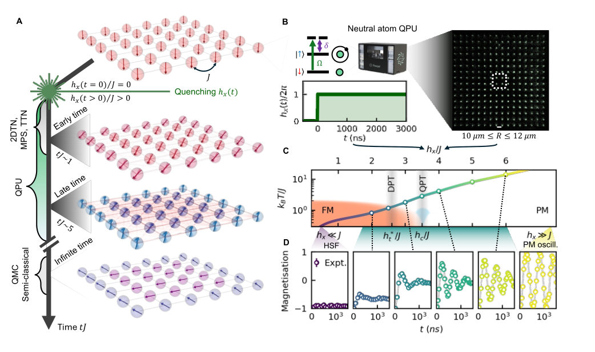
<figcaption class="paper-figure-caption"><b>Fig 1.</b> FIG. 1. Post-quench dynamics in the 2D TFIM. (A) We consider quantum simulations of post-quench dynamics described by the 2D TFIM. The qubits are initialized in a fully polarized state, and we study the dynamics following quenches to different values of hx, while hi z is chosen such that the longitudinal field in the bulk satisfies hz = 0 (see text). (B) In particular, we consider quantum simulators based on Rydberg atoms arranged in square arrays containing L × L qubits, with J denoting the nearest-neighbor Rydberg-Rydberg interaction. Control over the pulse shapes of the Rabi frequency, Ω(t), and the detuning, δ(t), as well as the relative distance between atoms, allows one to program...</figcaption>
</figure>
<figure class="paper-figure-card">
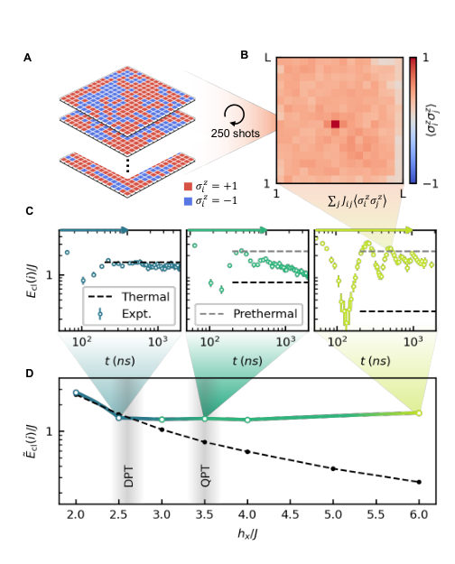
<figcaption class="paper-figure-caption"><b>Fig 2.</b> FIG. 2. Distinct regimes of nonequilibrium relaxation in the 2D TFIM (16 × 16 array). (A) Site-resolved pro- jective measurements of ˆσz i enable the construction of (B) the correlation matrix, ⟨ˆσz i ˆσz j ⟩. (C) Time evolution of the local classical energy Ecl(i, t) averaged over central sites for quenches to (left) hx/J = 2.5, (middle) hx/J = 3.5, and (right) hx/J = 6.0. The dashed black line indicates the ther- mal expectation value, and the gray dashed line indicates the prethermal expectation value. The arrows in the up- per part of each panel indicate the time interval of t = 1/J. (D) Time-averaged classical energy ˜Ecl(i) as a function of hx/J, together with the corresponding...</figcaption>
</figure>
<figure class="paper-figure-card">
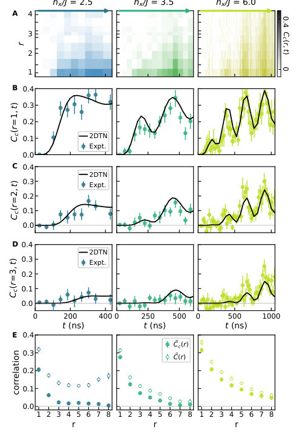
<figcaption class="paper-figure-caption"><b>Fig 3.</b> FIG. 3. Spatiotemporal buildup of connected correla- tions in the 2D TFIM (16×16 array) for hx/J = 2.5, 3.5, 6 (left to right). (A) Space-time map of the connected corre- lator Cc(r, t) (main text and Methods). Arrows on top axis show the early-time window until tJ = 1. The right-hand grayscale colorbar provides a common intensity normalization shared by all three heatmaps. (B-D) Time trace of Cc(r, t) for first (B), second (C) and third (D) neighbors along a lat- tice axis. Classical simulations based on 2DTN are shown for comparison (solid lines). Panel (E) shows the time-averaged, tJ ∈[1, 2], correlations and connected correlations as function of the distance r.</figcaption>
</figure>
<figure class="paper-figure-card">

<figcaption class="paper-figure-caption"><b>Fig 4.</b> Figure 3A shows the propagation Cc(r, t) over time, which reveals qualitatively distinct behavior across the relaxation regimes described in Fig. 2. To examine this in more detail, in Figs. 3B-D we plot the first three shells along a line. As a certification, we show quantitative</figcaption>
</figure>
<figure class="paper-figure-card">
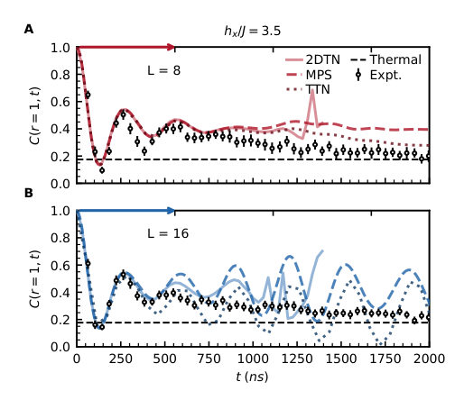
<figcaption class="paper-figure-caption"><b>Fig 5.</b> FIG. 4. Benchmarking tensor network approaches against QPU dynamics. Post-quench dynamics of the nearest-neighbor bulk correlations for quenches to hx/J = 3.5; two system sizes are considered, L = 8 and L = 16 respectively. In each panel, results obtained from the QPU are compared with classical simulations using 2DTN, MPS, and TTN methods, with the thermal QMC prediction shown through as a horizontal dashed line. The comparison high- lights the ability of different tensor network approaches to reproduce the observed dynamics and illustrates their rela- tive performance as the system size increases.</figcaption>
</figure>
</div>

<p><strong>Summary.</strong> The authors used a 2D Rydberg atom array to simulate the relaxation of a quantum magnet described by the TFIM. They discovered that the system exhibits more complex behavior than simple thermalization, identifying distinct prethermal and slow crossover regimes. This work validates Rydberg arrays as powerful tools for discovering new physics in non-equilibrium quantum dynamics.</p>
<p><strong>Why it may be interesting.</strong> This work directly bridges experimental quantum simulation platforms (Rydberg atoms) with fundamental theoretical problems in non-equilibrium many-body physics, providing concrete evidence of complex relaxation dynamics.</p>
<details>
<summary>Detailed structure</summary>
<p><strong>Main problem.</strong> The central problem is understanding how quantum matter relaxes far from equilibrium, moving beyond simple confirmation of theory to discovering new physical phenomena.</p>
<p><strong>Main result.</strong> The study identified a rich relaxation landscape in the 2D transverse-field Ising model, revealing not only rapid thermalization but also distinct prethermal and unexpected crossover regimes characterized by slow dynamics.</p>
<p><strong>Method.</strong> The research combines quantum simulation using programmable Rydberg atom arrays with theoretical analysis comparing results against classical tensor-network methods.</p>
<p><strong>Model / system.</strong> The system is a 2D Quantum Magnet modeled by the transverse-field Ising model (TFIM) Hamiltonian, implemented on a Rydberg atom array of 256 qubits. The dynamics are studied via quenching across different parameter ratios ($h_x/J$).</p>
<p><strong>Key observables.</strong> Magnetization $\langle\hat{\sigma}_z^i(t)
angle$, local classical energy $E_{	ext{cl}}(i, t)$, and connected correlations $C_c(r, t)$.</p>
<p><strong>Important parameters / regimes.</strong> The ratio of transverse field to coupling strength ($h_x/J$), which dictates the system's phase (e.g., ferromagnetic vs. paramagnetic).</p>
<p><strong>Assumptions / limitations.</strong> For numerical analysis, the study compares quantum simulation results against classical tensor-network methods, noting discrepancies in late-time behavior.</p>
<p><strong>Figures summary.</strong> Figures illustrate post-quench dynamics of local energy and magnetization for various $h_x/J$ ratios, mapping out different relaxation regimes across the phase diagram.</p>
<p><strong>Paper structure.</strong> The paper establishes the physical problem (non-equilibrium relaxation), details the system (2D TFIM on Rydberg array), presents measurements across varying quench parameters ($h_x/J$), and analyzes the resulting distinct dynamical regimes (thermalization, prethermalization, crossover).</p>
</details>
<details>
<summary>Abstract</summary>
<p>How quantum matter relaxes far from equilibrium is a central open problem in many-body physics, and one for which analog quantum simulators are well positioned to move from confirming theory to discovering new physics. Here, we use a two-dimensional Rydberg atom array of 256 qubits to map the relaxation landscape of the two-dimensional transverse-field Ising model across its phase diagram. Beyond the expected rapid thermalization, we identify two further regimes. The first is a prethermal regime whose dynamics are governed by an effective XY model. The second, and most unexpected, is a crossover regime characterized by a slowdown in relaxation. This slowdown occurs precisely where state-of-the-art classical tensor-network methods lose control at late times, whereas the quantum simulation remains consistent across system sizes. These results establish Rydberg atom arrays as a platform for scientific discovery in nonequilibrium quantum many-body dynamics.</p>
</details>
<p><sub><a href="#top">↑ back to top</a></sub></p>

<p><a id="paper-2608.06970"></a></p>
<h3 id="single-qubit-detection-by-collective-phase-imprinting">⭐ <a href="http://arxiv.org/abs/2608.06970v1">Single-qubit detection by collective phase imprinting</a></h3>
<p><strong>Highlighted author(s):</strong> Immanuel Bloch<br>
<strong>Authors:</strong> Kritsana Srakaew, Pascal Weckesser, Daniel Adler, Suchita Agrawal, David Gröters, Immanuel Bloch, Johannes Zeiher<br>
<strong>Type:</strong> experiment · <strong>Category:</strong> other · <strong>PDF:</strong> <a href="https://arxiv.org/pdf/2608.06970v1">https://arxiv.org/pdf/2608.06970v1</a><br>
<strong>Analysis basis:</strong> full PDF text, analyzed in chunks
<strong>Topic relevance:</strong> 🔥 <code>Rydberg arrays</code> <strong>4/5</strong> · <code>QC/QI experiment</code> <strong>3/5</strong> · <code>quantum measurements</code> <strong>3/5</strong> · <code>analog quantum simulation</code> <strong>2/5</strong> · <code>measurement-induced transitions</code> <strong>2/5</strong> · <code>correlated / nonlocal dissipation</code> <strong>1/5</strong> · <code>entanglement &amp; information structure</code> <strong>1/5</strong> · <code>interference shaping light</code> <strong>1/5</strong> · <code>non-equilibrium dynamics</code> <strong>1/5</strong></p>
<div class="figure-strip-hint">↔ Scroll figures horizontally</div>
<div class="paper-figures-scroll">
<figure class="paper-figure-card">
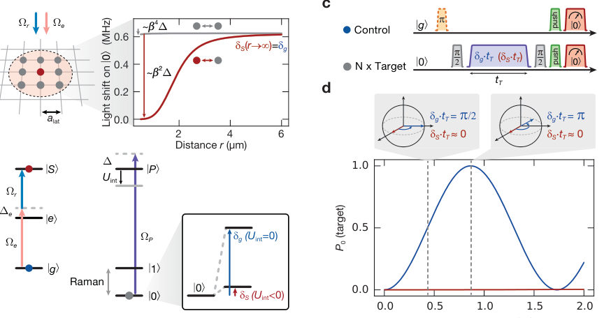
<figcaption class="paper-figure-caption"><b>Fig 1.</b> FIG. 1. Rydberg-mediated light shifts and controlled phase. (a) Schematic of the experimental setup. A 3×3 array of 87Rb atoms is prepared with a lattice spacing of alat = 752 nm. The central control qubit is initialized either in the ground state |g⟩(blue) or in the Rydberg state |S⟩(red), while all surrounding target spins (gray) are prepared in the hyperfine state |0⟩. The inset shows the distance-dependent AC-Stark shift δS(r →∞) ∼β2∆set by the |S⟩−|P⟩Rydberg interaction (red curve). On this scale, the fourth-order Rydberg-dressed interaction between neighboring target spins (gray curve) is negligible due to its higher-order scaling ∼β4∆. (b) Electronic level structure and excitation...</figcaption>
</figure>
<figure class="paper-figure-card">
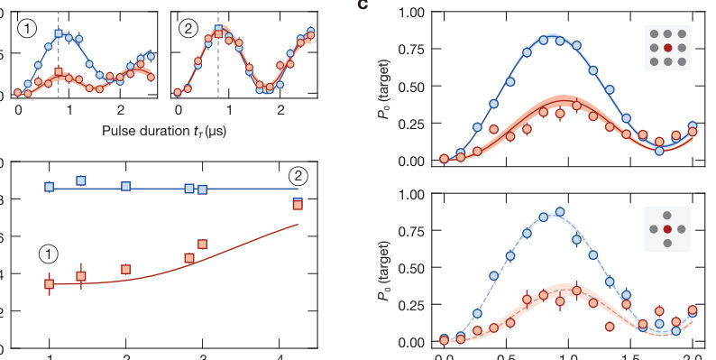
<figcaption class="paper-figure-caption"><b>Fig 2.</b> FIG. 2. Distance-dependence and fluctuation resilience of effective AC-Stark shift. (a) Controlled phase oscillations with the control spin in the ground (blue) or Rydberg (red) state. In 1 ○, with the control-target separation set to r = alat, the Rydberg interaction results in a strong contrast between the two cases. The observed infidelities are primarily limited by state-preparation errors. At larger distances (r = 3 √</figcaption>
</figure>
<figure class="paper-figure-card">
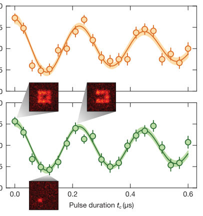
<figcaption class="paper-figure-caption"><b>Fig 3.</b> FIG. 3. Coherent control of the imprinted phase. (a) Schematic of the protocol. We apply a coherent Rabi drive |g⟩↔|S⟩on the control spin followed by a Ramsey mea- surement on the target spins with a constant duration of δgtT = π. This sequence maps the quantum state of the control spin onto the target spins. (b) Coherent Rabi oscilla- tions of the control spin measured via Rydberg-induced atom loss. (c) Oscillation of the target-spin hyperfine population, showing dynamics correlated with (b). Three representative single-shot fluorescence images highlight the clear oscillatory behavior in the target spins.</figcaption>
</figure>
<figure class="paper-figure-card">
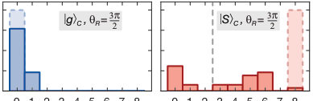
<figcaption class="paper-figure-caption"><b>Fig 4.</b> FIG. 4. Single Rydberg qubit detection. (a) Schematic of the protocol. The control spin is prepared in the ground state (|g⟩C) or the Rydberg state (|S⟩C) by a π pulse. The Raman pulse θR maps the accumulated phase onto popula- tion before measurement; θR = 3π/2 inverts the detection outcome compared to θR = π/2. (b) Spin number histogram for θR = π/2. For |g⟩C (blue), the histogram is concentrated in a range of 6 - 8 spins. For |S⟩C (red), successful Rydberg preparation results in 0 - 1 spin, while the 6 - 8 spin peak arises from imperfections in the Rydberg preparation. The dashed histograms represent the expected distribution under ideal conditions. Vertical dashed lines indicate the...</figcaption>
</figure>
</div>

<p><strong>Summary.</strong> The paper presents a novel technique to non-destructively read out the state of a single qubit by coupling it to an ensemble of atoms via a collective phase shift. By utilizing Rydberg dressing, they achieve a protocol robust against common experimental imperfections like atom loss. This opens pathways for high-fidelity mid-circuit quantum measurements in atomic quantum simulators.</p>
<p><strong>Why it may be interesting.</strong> This work provides an experimentally validated, scalable method for interfacing single qubits with large ensembles using highly controllable interactions (Rydberg dressing), which is crucial for quantum memory and measurement protocols in AMO physics.</p>
<details>
<summary>Detailed structure</summary>
<p><strong>Main problem.</strong> The core challenge is amplifying quantum information from a single qubit to a mesoscopic ensemble for non-destructive state detection.</p>
<p><strong>Main result.</strong> The authors successfully demonstrated the non-destructive detection of a single Rydberg excitation with a high state-assignment fidelity of 99.81%.</p>
<p><strong>Method.</strong> They map the control qubit state onto the target ensemble via a controlled collective phase shift, which is measured using Ramsey interferometry.</p>
<p><strong>Model / system.</strong> The platform couples a single control qubit (in a ground-to-Rydberg transition) to a Rydberg-dressed ensemble of ground-state atoms trapped in an optical lattice. The dressing makes the interaction robust against atom number fluctuations.</p>
<p><strong>Key observables.</strong> State-assignment fidelity ($\mathcal{F}$), fringe contrast changes, and population dynamics measured via Ramsey interferometry.</p>
<p><strong>Important parameters / regimes.</strong> The protocol is designed to be insensitive to atom loss and number fluctuations due to Rydberg dressing. Key parameters include the AC-Stark shift ($\delta_g$) and Rabi frequencies ($\Omega$).</p>
<p><strong>Assumptions / limitations.</strong> Fidelity estimations rely on statistical analysis of experimental histograms (e.g., Youden's J statistic) and assuming independent target spin interactions.</p>
<p><strong>Figures summary.</strong> Figures illustrate the setup, electronic level structure, Ramsey protocols showing controlled-phase oscillations for different control states, and comparisons demonstrating resilience to atom number variations.</p>
<p><strong>Paper structure.</strong> The paper introduces the problem of quantum information amplification, details the Rydberg-dressed coupling mechanism via a controlled phase shift, presents experimental results confirming state transfer fidelity, and discusses implications for mid-circuit readout.</p>
</details>
<details>
<summary>Abstract</summary>
<p>The amplification of quantum information carried by a single quantum excitation is a recurring challenge across diverse quantum platforms. The coupling between a single qubit and a mesoscopic ensemble of spins, for example, can be leveraged to realize non-destructive detection of the qubit state. However, realizing robust couplings between such systems is experimentally challenging and typically requires programmable quantum gates or native long-range interactions. Here, we introduce a platform that couples a single qubit, encoded in the ground-to-Rydberg transition of a control atom, to a Rydberg-dressed target ensemble of ground-state atoms trapped in an optical lattice. We show that the state of the control qubit can be coherently mapped onto the ensemble via a qubit-controlled collective phase shift. By Rydberg-dressing the ensemble, the controlled phase shift per target atom becomes independent of the number of target atoms, making the protocol intrinsically insensitive to atom-number fluctuations and atom loss, which are the dominant experimental imperfections in our system. Exploiting the collective response of up to eight target spins, we demonstrate the efficacy of the scheme by realizing non-destructive detection of a single Rydberg excitation with a state-assignment fidelity of $\mathcal{F} = 99.81^{+0.17}_{-1.47}\,\%$. Our approach demonstrates the key ingredients for high-fidelity transfer of quantum information from a single qubit to a mesoscopic ensemble, opening a route to non-destructive mid-circuit readout of Rydberg states and to efficient interfaces between single qubits and photonic modes.</p>
</details>
<p><sub><a href="#top">↑ back to top</a></sub></p>

<p><a id="paper-2608.07242"></a></p>
<h3 id="crossing-over-universal-scaling-laws-in-two-dimensional-driven-dissipative-condensates"><a href="http://arxiv.org/abs/2608.07242v1">Crossing over universal scaling laws in two-dimensional driven dissipative condensates</a></h3>
<p><strong>Authors:</strong> Q. Fontaine, F. Helluin, M. Escalera, D. Pinto Dias, A. Lemaître, M. Morassi, M. Wouters, A. Minguzzi, L. Canet, S. Ravets, J. Bloch<br>
<strong>Type:</strong> both · <strong>Category:</strong> statistical mechanics · <strong>PDF:</strong> <a href="https://arxiv.org/pdf/2608.07242v1">https://arxiv.org/pdf/2608.07242v1</a><br>
<strong>Analysis basis:</strong> full PDF text, analyzed in chunks
<strong>Topic relevance:</strong> 🔥 <code>non-equilibrium universality</code> <strong>5/5</strong> · 🔥 <code>analog quantum simulation</code> <strong>4/5</strong> · 🔥 <code>driven-dissipative phase transition</code> <strong>4/5</strong> · <code>correlated / nonlocal dissipation</code> <strong>3/5</strong> · <code>correlated cavity matter</code> <strong>3/5</strong> · <code>non-equilibrium dynamics</code> <strong>3/5</strong> · <code>methods for driven-dissipative</code> <strong>2/5</strong> · <code>quantum optics experiment</code> <strong>2/5</strong> · <code>Frenkel-Kontorova</code> <strong>1/5</strong> · <code>Keldysh / 2PI / non-Gaussian methods</code> <strong>1/5</strong> · <code>Tavis-Cummings &amp; cavity-many-emitter</code> <strong>1/5</strong> · <code>entanglement &amp; information structure</code> <strong>1/5</strong></p>
<div class="figure-strip-hint">↔ Scroll figures horizontally</div>
<div class="paper-figures-scroll">
<figure class="paper-figure-card">
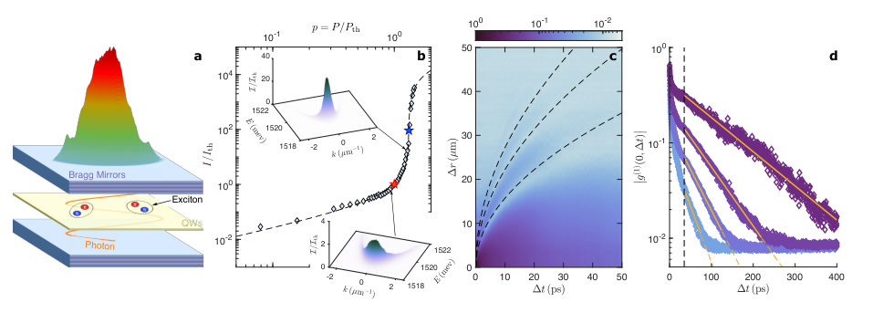
<figcaption class="paper-figure-caption"><b>Fig 1.</b> FIG. 1. a Sketch of the microcavity sample operating in the strong exciton-photon regime, where an extended polariton condensate is optically generated. b Normalized emission intensity I/Ith as a function of the normalized excitation power p = P/Pth, where Pth (Ith) is the excitation power (measured intensity) at condensation threshold. The black dashed line shows a fit using a single-mode lasing model from which Pth (red star) is determined as well as Ptrp (blue star) the transparency threshold (see Methods and SI). Bottom (top) inset: measured emission intensity as a function of energy and momentum represented in 3D for p ≃0.89 (resp. p ≃1.22). c Measured |g(1)(∆r, ∆t)| as a function of...</figcaption>
</figure>
<figure class="paper-figure-card">

<figcaption class="paper-figure-caption"><b>Fig 2.</b> Fig. 1 for a description of the determination of Pth as well as the transparency threshold Ptrp</figcaption>
</figure>
<figure class="paper-figure-card">
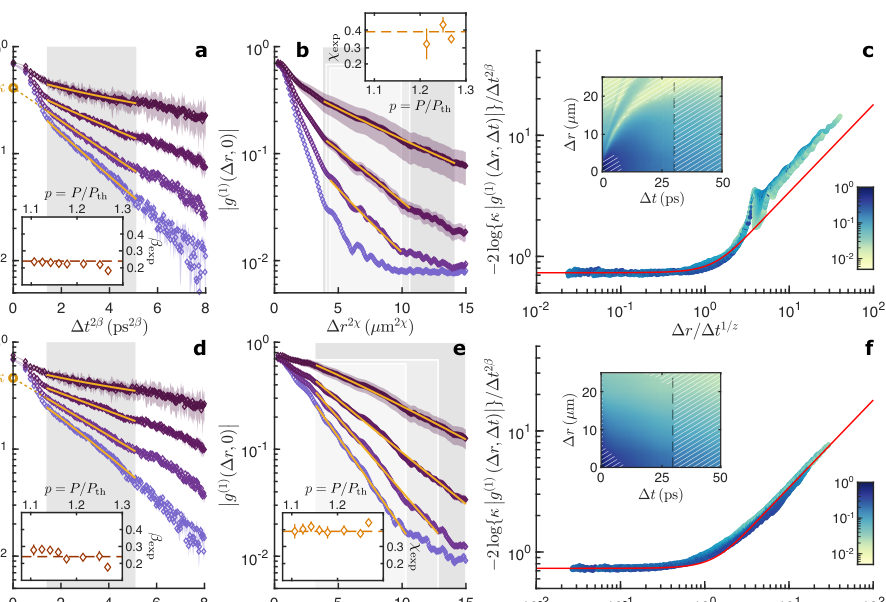
<figcaption class="paper-figure-caption"><b>Fig 3.</b> FIG. 2. Observation of KPZ universal scaling in 2D polariton condensates. a-b. Semi- logarithmic plots of the measured values of |g(1)(0, ∆t)| versus ∆t2β (panel a), and |g(1)(∆r, 0)|) versus ∆r2χ (panel b) for p = 1.14, 1.21, 1.25, 1.27. The experimental data points are represented by symbols forming thick lines in some parts of the graph. The orange lines are stretched expo- nential fits over the KPZ windows indicated by darker areas. The errorbars around each curve are obtained from multiple interferograms analysis. Insets: the diamond symbols plot the exper- imental values of βexp (panel a) and χexp (panel b) extracted from stretched exponential fits to the data, as a function of p....</figcaption>
</figure>
<figure class="paper-figure-card">
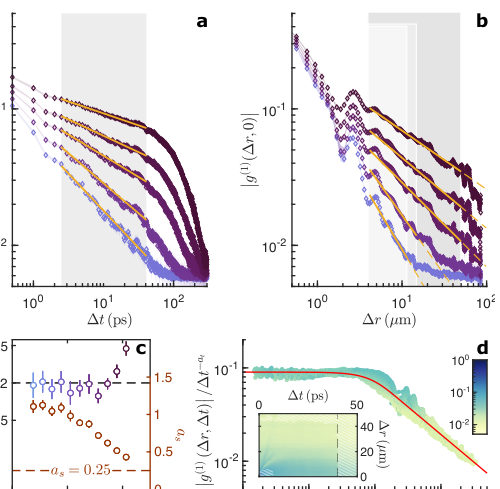
<figcaption class="paper-figure-caption"><b>Fig 4.</b> FIG. 3. Observation of EW universal scaling in 2D polariton condensates. a (b): Measured values of |g(1)(∆r0, ∆t)| (|g(1)(∆r, 0)|) as a function of ∆t (∆r) in logarithmic scale for p = 1.14, 1.28, 1.35, 1.38, 1.41. In a ∆r0 = 1 µm. Straight orange lines: power-law fits over the EW windows indicated with dark areas. Errorbars are calculated by performing a repeatability analysis on multiple interferograms. c. Measured values of the spatial exponent as and of as/at (at is the temporal exponent) as a function of p. Errorbars are determined from the ±σ uncertainties on the fitted exponents in a and b. d: Plot of |g(1)(∆r, ∆t)|)/∆t−at measured for p = 1.35 as a function of ∆r/2 √</figcaption>
</figure>
<figure class="paper-figure-card">
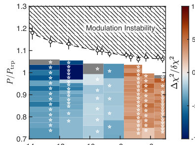
<figcaption class="paper-figure-caption"><b>Fig 5.</b> FIG. 4. Phase diagram of the 2D driven-dissipative polariton condensate White stars indicate experimental measurements as function of δ and normalized pump power P/Ptrp. The colors around these points are determined from a comparative likelihood analysis between the KPZ and EW fits of the first-order coherence temporal decay based on the value of ∆χ2/δχ2</figcaption>
</figure>
</div>

<p><strong>Summary.</strong> The paper investigates universal scaling laws in 2D polariton condensates, demonstrating a crossover between the Kardar-Parisi-Zhang (KPZ) and Edwards-Wilkinson (EW) regimes. By measuring spatio-temporal coherence, the authors confirm that these driven-dissipative systems serve as an excellent platform for studying non-equilibrium critical phenomena. This bridges fundamental statistical theory with advanced quantum optics experiments.</p>
<p><strong>Why it may be interesting.</strong> This work provides a highly controllable, solid-state platform (polaritons) to experimentally verify fundamental concepts from non-equilibrium statistical mechanics, such as the KPZ universality class, which is crucial for understanding driven many-body systems.</p>
<details>
<summary>Detailed structure</summary>
<p><strong>Main problem.</strong> The study investigates universal scaling laws, specifically the crossover between Edwards-Wilkinson (EW) and Kardar-Parisi-Zhang (KPZ), governing coherence decay in non-equilibrium systems.</p>
<p><strong>Main result.</strong> The authors experimentally demonstrate that 2D polariton condensates exhibit clear crossovers between KPZ super-diffusive and EW diffusive scaling regimes by tuning system parameters. They also show that topological defects are largely paired, suggesting the underlying physics is governed by phase fluctuations at large scales.</p>
<p><strong>Method.</strong> The research combines experimental measurements of spatio-temporal first-order coherence with numerical simulations to analyze defect dynamics and correlation functions.</p>
<p><strong>Model / system.</strong> The physical system is two-dimensional driven-dissipative polariton condensates realized in semiconductor optical microcavities. The behavior contrasts with equilibrium 2D bosonic systems (BKT class) by exploring non-equilibrium universality classes like KPZ and EW.</p>
<p><strong>Key observables.</strong> Spatio-temporal first-order coherence function ($g^{(1)}(\Delta\mathbf{r}, \Delta t)$), critical exponents, defect pair correlations ($g^{(2)}$), and vortex/anti-vortex lifetimes ($    au$).</p>
<p><strong>Important parameters / regimes.</strong> System detuning ($\hbar\delta$), excitation power ratio ($p = P/P_{th}$), spatial filter width ($\sigma_f$), and interaction strength ($g_R$) relative to loss rates.</p>
<p><strong>Assumptions / limitations.</strong> The analysis assumes that at large scales, the coherence decay is dominated by phase fluctuations, allowing for the separation of density correlations from universal scaling laws. Numerical simulations require an energy cutoff ($    au_c$).</p>
<p><strong>Figures summary.</strong> Figures show heat maps and temporal/spatial coherence decays confirming KPZ (stretched exponential) and EW (power-law) scaling at different detunings. Supplementary figures detail vortex clustering, defect lifetime distributions, and pair correlations.</p>
<p><strong>Paper structure.</strong> The paper establishes the context by contrasting equilibrium (BKT) vs. non-equilibrium physics. It then presents experimental evidence for KPZ/EW crossovers using coherence measurements, followed by detailed numerical analysis confirming that phase fluctuations dominate over short-lived topological defects at macroscopic scales.</p>
</details>
<details>
<summary>Abstract</summary>
<p>In low dimensional systems, fluctuations are enhanced and prevent the spontaneous breaking of continuous symmetries. As a result, spatial and temporal correlation functions decay at large distances and long times. A well established example is given by two-dimensional bosonic condensates at equilibrium, which do not display long-range order of the coherence but algebraic decay belonging to the Berezinski-Kosterlitz-Thouless universality class. In contrast, the universal behaviors of non-equilibrium bosonic condensates are more diverse and many open questions remain. Here, we explore the spatio-temporal coherence properties of two-dimensional driven-dissipative polariton condensates in semiconductor optical microcavities. By tuning microscopic parameters, we observe a cross-over between two scaling laws that we attribute to the Edwards-Wilkinson (EW) and the Kardar-Parisi-Zhang (KPZ) universality classes. We demonstrate the collapse of the measured first-order correlations onto the EW and KPZ universal scaling functions and obtain critical exponents, well matching the values predicted theoretically. Our results highlight the intrinsic non-equilibrium nature of polariton condensates and establish them as a platform of choice for controlled exploration of the two-dimensional KPZ universality class.</p>
</details>
<p><sub><a href="#top">↑ back to top</a></sub></p>

<p><a id="paper-2608.06815"></a></p>
<h3 id="entanglement-enhanced-optical-magnetometry-beyond-the-standard-quantum-limit"><a href="http://arxiv.org/abs/2608.06815v1">Entanglement-enhanced optical magnetometry beyond the standard quantum limit</a></h3>
<p><strong>Authors:</strong> Jun Jia, Túlio Brito Brasil, Maimouna Bocoum, Andrea Grimaldi, Laurits Møberg, Mikhail Balabas, Jörg Helge Müller, Emil Zeuthen, Eugene Simon Polzik<br>
<strong>Type:</strong> experiment · <strong>Category:</strong> other · <strong>PDF:</strong> <a href="https://arxiv.org/pdf/2608.06815v1">https://arxiv.org/pdf/2608.06815v1</a><br>
<strong>Analysis basis:</strong> full PDF text, analyzed in chunks
<strong>Topic relevance:</strong> 🔥 <code>quantum measurements</code> <strong>5/5</strong> · 🔥 <code>measurement-induced transitions</code> <strong>4/5</strong> · <code>quantum optics experiment</code> <strong>3/5</strong> · <code>spintronics-quantum-optics interface</code> <strong>3/5</strong> · <code>correlated / nonlocal dissipation</code> <strong>2/5</strong> · <code>entanglement &amp; information structure</code> <strong>2/5</strong> · <code>exotic spin models in light-matter</code> <strong>2/5</strong> · <code>Keldysh / 2PI / non-Gaussian methods</code> <strong>1/5</strong> · <code>QC/QI experiment</code> <strong>1/5</strong> · <code>analog quantum simulation</code> <strong>1/5</strong> · <code>driven-dissipative phase transition</code> <strong>1/5</strong> · <code>interference shaping light</code> <strong>1/5</strong> · <code>methods for driven-dissipative</code> <strong>1/5</strong> · <code>non-equilibrium dynamics</code> <strong>1/5</strong></p>
<div class="figure-strip-hint">↔ Scroll figures horizontally</div>
<div class="paper-figures-scroll">
<figure class="paper-figure-card">
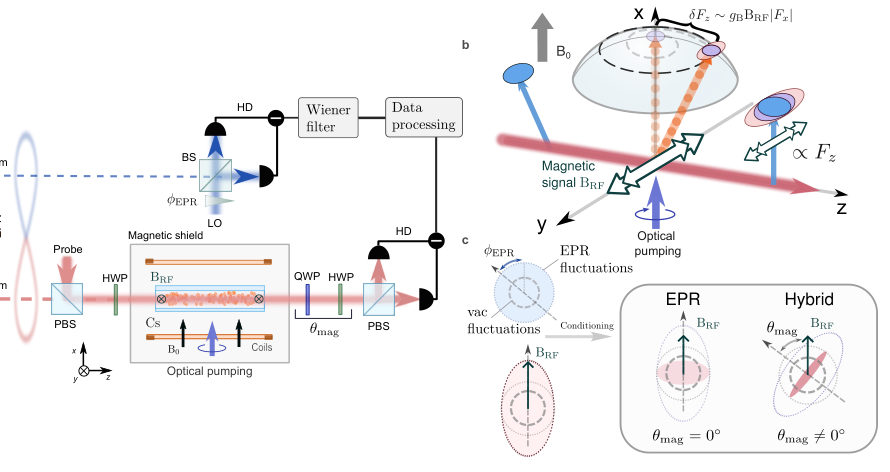
<figcaption class="paper-figure-caption"><b>Fig 1.</b> Figure 1. Principles of the entanglement-enhanced optical magnetometer and quantum-noise cancellation. a, The input state of the pair of light beams (1064 and 852 nm) is EPR-entangled. The probe beam at 852 nm interacts off-resonantly with an ensemble of Cs atoms optically pumped parallel to the dc magnetic field B0. Quantum noise in the quadrature θmag, defined by the quarter waveplate (QWP), the half-wave plate (HWP), and polarizing beam splitter (PBS), is detected by a polarization homodyne detector (HD). The quadrature of the entangled reference beam at 1064 nm set by the phase shift ϕEPR and measured by a second HD. A Wiener filter optimally suppresses quantum measurement noise to...</figcaption>
</figure>
<figure class="paper-figure-card">
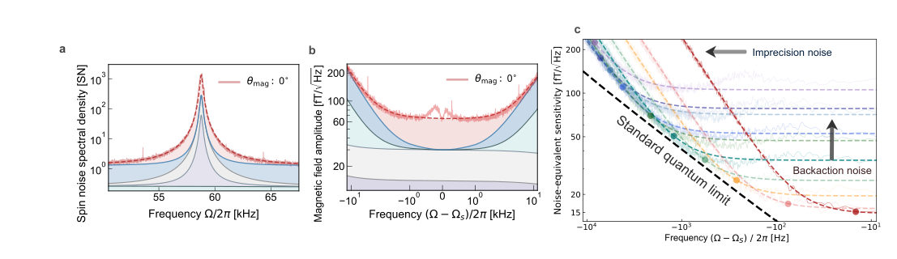
<figcaption class="paper-figure-caption"><b>Fig 2.</b> Figure 2. Noise budget and sensitivity limits of an RF orientation-based optical magnetometer. a, Measured phase quadrature (θmag = 0◦) of the spin noise spectrum for a vacuum-noise-limited probe (red trace) in probe shot noise units. The red dashed curve shows the fitted spin noise and the shaded areas present individual noise contributions: quantum backaction (red), measurement imprecision (blue), spin thermal noise (grey), spin projection (purple), and spin broadband (teal). b, Magnetic field sensitivity reconstructed using quantum noise data from a. Coloured areas with the same colour code as in a highlight the dominant noise contributions across the entire frequency range. c,...</figcaption>
</figure>
<figure class="paper-figure-card">
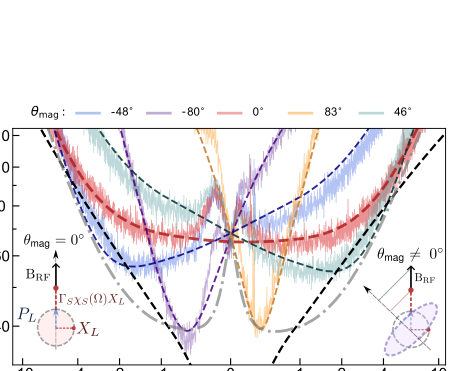
<figcaption class="paper-figure-caption"><b>Fig 3.</b> Figure 3. Quantum-enhanced optical magnetometer enabled by variational readout. The output-light phasor diagrams illustrate the quantum enhancement mechanism of the variational readout. At θmag = 0◦(left inset), imprecision (PL) and backaction (ΓSχS(Ω)XL) are uncorrelated, add incoherently, and lie along the signal (BRF) limiting the sensitivity. Rotating the detection quadrature away from the pure phase quadrature (θmag , 0◦, right inset) utilizes the backaction-imprecision correlation – the ponderomotive squeezing (purple ellipse) – to reduce the measurement noise. Sensitivity en- hancement occurs when the noise reduction outweighs the accom- panying cos(θmag) signal loss. The colour...</figcaption>
</figure>
<figure class="paper-figure-card">
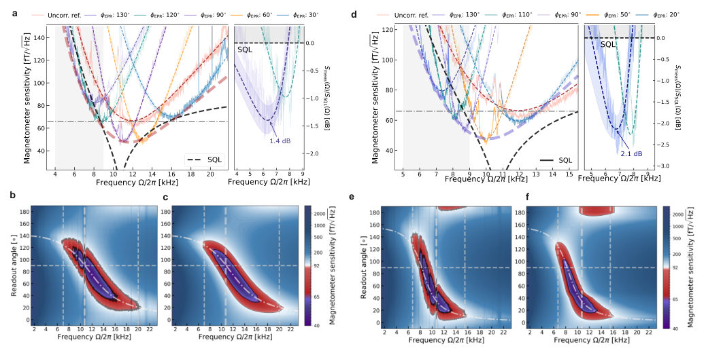
<figcaption class="paper-figure-caption"><b>Fig 4.</b> Figure 4. Entanglement-enhanced optical magnetometer. a, Entanglement injection and no variational readout, the magnetometer detection phase phase (θmag = 0◦) while the 1064-nm reference mode is measured with a tunable phase (ϕEPR). The plot shows the noise-equivalent magnetic-field sensitivity spectra calibrated for a Larmor precession of 10.7 kHz. The uncorrelated spin noise reference (light red trace) yields a peak sensitivity of 65 fT/ √</figcaption>
</figure>
<figure class="paper-figure-card">
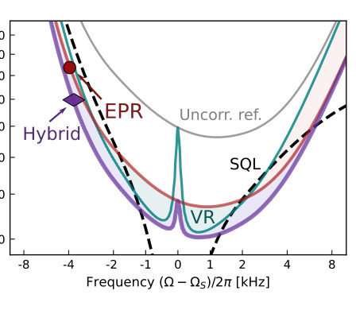
<figcaption class="paper-figure-caption"><b>Fig 5.</b> Figure 5. Optical magnetometer with frequency-optimized de- tection and EPR conditioning phases. Teal, red, and purple curves show the predicted quantum-enhanced magnetometer sensitivity for variational readout (VR), EPR conditioning, and hybrid configura- tion, respectively, based on the experimentally calibrated parameters. The shaded regions indicate the frequency ranges in which each con- figuration outperforms the others. Diamond and circle markers de- note the experimentally observed sensitivity enhancement discussed in this work. The grey curve is the uncorrelated, vacuum limited spin noise reference, while the dashed black line indicates the SQL. The Larmor frequency ΩS/2π is fixed...</figcaption>
</figure>
</div>

<p><strong>Summary.</strong> The paper details achieving magnetometry sensitivity beyond the Standard Quantum Limit using optical atomic ensembles. This is accomplished through a sophisticated hybrid technique that combines variational readout exploiting intra-channel quantum correlations with EPR conditioning utilizing entangled light states for cross-channel noise suppression. The result demonstrates enhanced, broadband magnetic field sensing in a practical, room-temperature setting.</p>
<p><strong>Why it may be interesting.</strong> This work is highly relevant as it pushes the boundaries of quantum sensing by demonstrating practical methods (hybrid schemes) to beat fundamental measurement limits in a real-world atomic platform, bridging theory with advanced experimental implementation.</p>
<details>
<summary>Detailed structure</summary>
<p><strong>Main problem.</strong> The primary challenge is achieving optical magnetometry sensitivity beyond the Standard Quantum Limit (SQL) imposed by measurement backaction and imprecision noise.</p>
<p><strong>Main result.</strong> The authors successfully demonstrated sub-SQL magnetic field sensitivity in a room-temperature atomic platform by combining variational readout with entanglement conditioning using an EPR source.</p>
<p><strong>Method.</strong> They employ a hybrid quantum sensing scheme that combines intra-channel correlations (variational readout) with inter-channel correlations derived from measuring one mode of a bipartite entangled light state and conditioning the results on the other.</p>
<p><strong>Model / system.</strong> The system is an optical magnetometer using an ensemble of optically polarized atoms sensitive to external magnetic fields. The noise analysis models the total measurement noise as a sum of imprecision, backaction, spin, and correlation terms.</p>
<p><strong>Key observables.</strong> Magnetic-field sensitivity ($\delta B(\Omega)$), quantum noise quadratures (e.g., $    heta_{  ext{mag}}$), and the measured Power Spectrum Density (PSD) for various noise contributions.</p>
<p><strong>Important parameters / regimes.</strong> Acoustic frequencies ($\sim 7$ kHz to broadband), probe power, variational readout angle ($   heta_{mag}$), and EPR conditioning phase ($\phi_{EPR}$).</p>
<p><strong>Assumptions / limitations.</strong> The analysis assumes Markovian noise sources for spin Langevin forces and models optical losses (transmissivity $\eta$) which degrade squeezing.</p>
<p><strong>Figures summary.</strong> Figures illustrate the setup using EPR entanglement, show phasor diagrams comparing noise before and after conditioning, and present reconstructed magnetic field sensitivity spectra demonstrating performance surpassing the predicted SQL line across various frequencies.</p>
<p><strong>Paper structure.</strong> The paper progresses by first establishing the SQL limit in standard measurements. It then introduces variational readout to exploit intra-channel correlations. Finally, it combines this with EPR conditioning using entangled light states to achieve a hybrid scheme that surpasses the SQL across an accessible acoustic frequency band.</p>
</details>
<details>
<summary>Abstract</summary>
<p>Optical atomic magnetometry is a powerful tool for continuous sensing applications, yet, in the absence of quantum correlations, its sensitivity is limited by the standard quantum limit (SQL) stemming from a trade-off between optical probe imprecision and quantum measurement backaction. Beyond-SQL sensitivity requires quantum correlations that modify these measurement noise sources. Here we demonstrate such sensitivity by using entangled state of the probe light and by engineering correlations between measurement imprecision and backaction. Having first explored SQL in a broad range of frequencies, we demonstrate overcoming the limit by combining variational readout with coupling the magnetometer to one mode of a bipartite entangled light state and conditioning the results on the other entangled mode. Tuning the detected light quadratures and combining the signals from the two measurement channels, we achieve sensitivity beyond the SQL in a broad range of acoustic frequencies which has so far remained inaccessible to quantum-noise-limited optical magnetometry.</p>
</details>
<p><sub><a href="#top">↑ back to top</a></sub></p>

<p><a id="paper-2608.07149"></a></p>
<h3 id="many-body-localization-induced-by-correlated-disorder-in-interacting-superconducting-qubits"><a href="http://arxiv.org/abs/2608.07149v1">Many-Body Localization Induced by Correlated Disorder in Interacting Superconducting Qubits</a></h3>
<p><strong>Authors:</strong> Thiago R. Girão Souza, Andreia Saguia, Alan C. Santos, Marcelo S. Sarandy<br>
<strong>Type:</strong> theory · <strong>Category:</strong> disordered systems and neural networks · <strong>PDF:</strong> <a href="https://arxiv.org/pdf/2608.07149v1">https://arxiv.org/pdf/2608.07149v1</a><br>
<strong>Analysis basis:</strong> full PDF text, analyzed in chunks
<strong>Topic relevance:</strong> 🔥 <code>entanglement &amp; information structure</code> <strong>5/5</strong> · 🔥 <code>analog quantum simulation</code> <strong>4/5</strong> · <code>methods for driven-dissipative</code> <strong>3/5</strong> · <code>QC/QI experiment</code> <strong>2/5</strong> · <code>non-equilibrium dynamics</code> <strong>2/5</strong> · <code>correlated / nonlocal dissipation</code> <strong>1/5</strong> · <code>driven-dissipative phase transition</code> <strong>1/5</strong> · <code>exotic spin models in light-matter</code> <strong>1/5</strong> · <code>non-equilibrium universality</code> <strong>1/5</strong> · <code>scars &amp; prethermalization</code> <strong>1/5</strong></p>
<div class="figure-strip-hint">↔ Scroll figures horizontally</div>
<div class="paper-figures-scroll">
<figure class="paper-figure-card">
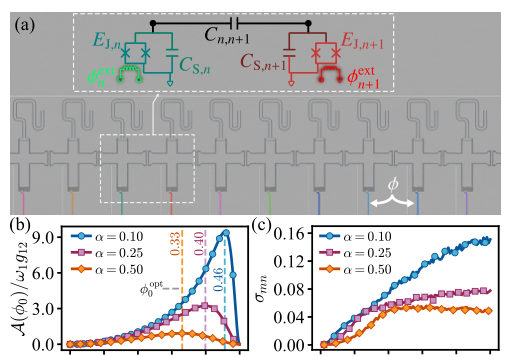
<figcaption class="paper-figure-caption"><b>Fig 1.</b> Figure 1. (a) Proposed experimental setup to observe MBL tran- sitions in superconducting circuits through correlated disorder in a linear chain of transmon qubits. Inset we show the circuit diagram for two neighboring qubits, n and n + 1, with their respective Shunt- ing capacitances (CS,n), Josephson energies (EJ,n), and local external flux (ϕn), in addition to the qubit-qubit coupling capacitance (Cn,n+1). Different colors used for flux lines denote random values of ϕn. (b) Coefficient Am(ϕ0), normalized by ω1g12 := ω1(ϕ0)g12(ϕ0), as func- tion of the reference external flux ϕ0 for different values of the junc- tion asymmetry parameter α (shown in (c)). Vertical dashed lines denote the...</figcaption>
</figure>
<figure class="paper-figure-card">
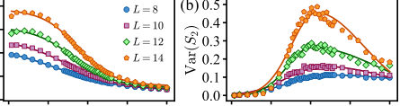
<figcaption class="paper-figure-caption"><b>Fig 2.</b> Figure 2. (a) Mean half-system block entanglement ⟨S 2⟩, averaged over ten eigenstates in the middle of the spectrum, as a function of the disorder strength ∆ϕ for system sizes up to L = 14 spins. (b) Variance of the block entanglement over disorder ensembles as a function of ∆ϕ. The maximum grows with L and occurs at (∆ϕ)max ≈2.17 for L = 14. The parameters of the system are the same as in Fig. 1.</figcaption>
</figure>
<figure class="paper-figure-card">
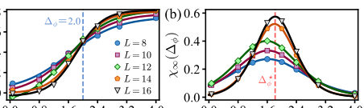
<figcaption class="paper-figure-caption"><b>Fig 3.</b> Figure 3. (a) Disorder-averaged late-time local-memory param- eter ⟨M⟩as a function of the disorder strength ∆ϕ for L ∈ {8, 10, 12, 14, 16}. The memory is evaluated for a time τL ≃864, corresponding to t ≃320 ns, with τL = gnnt. The curves exhibit a scale-invariant crossing point at ∆ϕ ≃2. (b) Numerical derivative d⟨M⟩/d∆ϕ versus ∆ϕ. The peak of the derivative scales with system size L, reaching  d⟨M⟩/d∆ϕ </figcaption>
</figure>
</div>

<p><strong>Summary.</strong> This work analyzes Many-Body Localization in superconducting transmon qubit networks subjected to realistic, correlated disorder. The authors demonstrate that the MBL transition remains robust even when considering complex, non-local disorder patterns inherent to physical hardware. This provides a vital theoretical framework for designing stable quantum processors.</p>
<p><strong>Why it may be interesting.</strong> It bridges fundamental condensed matter concepts (MBL) with cutting-edge quantum hardware platforms (superconducting qubits), providing concrete diagnostic tools for assessing device viability in complex disorder regimes.</p>
<details>
<summary>Detailed structure</summary>
<p><strong>Main problem.</strong> The study investigates Many-Body Localization (MBL) induced by correlated disorder in interacting superconducting qubits, moving beyond simplified models that only consider purely random disorder.</p>
<p><strong>Main result.</strong> The MBL phase transition is shown to be robust against unavoidable correlated disorder arising from network interactions, which is crucial for designing realistic quantum processors.</p>
<p><strong>Method.</strong> The analysis employs multiple diagnostics including block entanglement entropy (Rényi entropy) and a local memory parameter derived from site occupation number dynamics.</p>
<p><strong>Model / system.</strong> The system consists of transmon qubits in an array structure, governed by a Hamiltonian incorporating nearest-neighbor couplings and onsite energies that are subject to tunable correlated disorder via external magnetic flux.</p>
<p><strong>Key observables.</strong> Block entanglement entropy ($\langle S_2 
angle$), variance of block entanglement ($ ext{Var}(S_2)$), and the local memory parameter ($\langle M(t) 
angle$).</p>
<p><strong>Important parameters / regimes.</strong> Disorder strength ($\Delta\phi$) controlled by external flux ($\phi_0$); junction asymmetry parameter ($\alpha$); filling factor ($
u$).</p>
<p><strong>Assumptions / limitations.</strong> The analysis sometimes assumes statistical independence of local flux fluctuations for calculating covariance, but the core finding addresses robustness despite unavoidable correlations.</p>
<p><strong>Figures summary.</strong> Figures illustrate how entanglement entropy scales (volume-law vs. area-law) across disorder strengths and show the enhancement of the dimensionless disorder parameter ($\Delta(\phi_0)$) around $\phi_0 \simeq 0.5$.</p>
<p><strong>Paper structure.</strong> The paper first establishes the physical model using transmon qubits subjected to flux-controlled correlated disorder, then applies entanglement entropy diagnostics to locate the MBL critical point, and finally corroborates these findings using a local memory parameter analysis.</p>
</details>
<details>
<summary>Abstract</summary>
<p>The failure of quantum thermalization due to Many-Body Localization (MBL) has evolved from a theoretical concept in spin chains to an experimental reality in synthetic quantum platforms, most notably superconducting circuits based on transmon qubits. Despite its significance, the MBL transition has been studied primarily under purely random disorder and local couplings, leaving more complex and realistic configurations largely unexplored. Here, we investigate the quantum dynamics of transmon networks subject to the unavoidable competing effects of correlated disorder and network-mediated non-local interactions. First, we show how to engineer the physical parameters of the quantum hardware to systematically control the correlated disorder patterns emerging in the system. Then, we demonstrate that the MBL phase transition is robust against such correlations, which is essential for tuning localization properties in realistic transmon devices. This robustness is established through the analysis of the block entanglement entropy variance across disorder realizations, which precisely locates the MBL critical point. Independently, we introduce a local memory parameter, whose dynamics at long evolution times reveals memory retention in the localized phase and yields a critical point consistent with the entropy analysis. These results provide a framework for understanding localization in complex quantum network topologies, with potential implications for multi-qubit processor design.</p>
</details>
<p><sub><a href="#top">↑ back to top</a></sub></p>

<p><a id="paper-2608.07034"></a></p>
<h3 id="multimode-phonon-mediated-enhancement-of-entanglement-and-competing-synchronization-in-cavity-magnomechanics"><a href="http://arxiv.org/abs/2608.07034v1">Multimode phonon-mediated enhancement of entanglement and competing synchronization in cavity magnomechanics</a></h3>
<p><strong>Authors:</strong> Z. Imara, Jia-Xin Peng, E. K. Berinyuy, S. K. Singh, A. El Allati<br>
<strong>Type:</strong> theory · <strong>Category:</strong> other · <strong>PDF:</strong> <a href="https://arxiv.org/pdf/2608.07034v1">https://arxiv.org/pdf/2608.07034v1</a><br>
<strong>Analysis basis:</strong> full PDF text, analyzed in chunks
<strong>Topic relevance:</strong> 🔥 <code>entanglement &amp; information structure</code> <strong>4/5</strong> · 🔥 <code>spintronics-quantum-optics interface</code> <strong>4/5</strong> · <code>analog quantum simulation</code> <strong>3/5</strong> · <code>correlated / nonlocal dissipation</code> <strong>3/5</strong> · <code>correlated cavity matter</code> <strong>3/5</strong> · <code>driven-dissipative phase transition</code> <strong>3/5</strong> · <code>exotic spin models in light-matter</code> <strong>3/5</strong> · <code>methods for driven-dissipative</code> <strong>3/5</strong> · <code>non-equilibrium dynamics</code> <strong>3/5</strong> · <code>Tavis-Cummings &amp; cavity-many-emitter</code> <strong>2/5</strong> · <code>non-equilibrium universality</code> <strong>2/5</strong> · <code>Keldysh / 2PI / non-Gaussian methods</code> <strong>1/5</strong> · <code>quantum optics experiment</code> <strong>1/5</strong></p>
<div class="figure-strip-hint">↔ Scroll figures horizontally</div>
<div class="paper-figures-scroll">
<figure class="paper-figure-card">
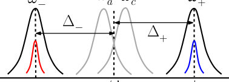
<figcaption class="paper-figure-caption"><b>Fig 1.</b> FIG. 1: (a) Schematic of the multimode polaromechani- cal system. Strong coupling between the microwave cavity mode a and magnon mode c creates two hybrid cavity– magnon polariton (CMP) modes p+ and p−. Each po- lariton dispersively couples to k mechanical modes (bj, j = 1, . . . , k) via magnetostriction. (b) Frequency dia- gram. The magnon mode is driven at frequency ω0, and phonons scatter the driving photons onto Stokes (ω0 −ω1) and anti-Stokes (ω0 + ω1) sidebands. Setting the polariton frequencies resonant with the sidebands, ω−≃ω0 −ω1 and ω+ ≃ω0 + ω1, enables entanglement between the two polaritons via collective phonon mediation.</figcaption>
</figure>
<figure class="paper-figure-card">
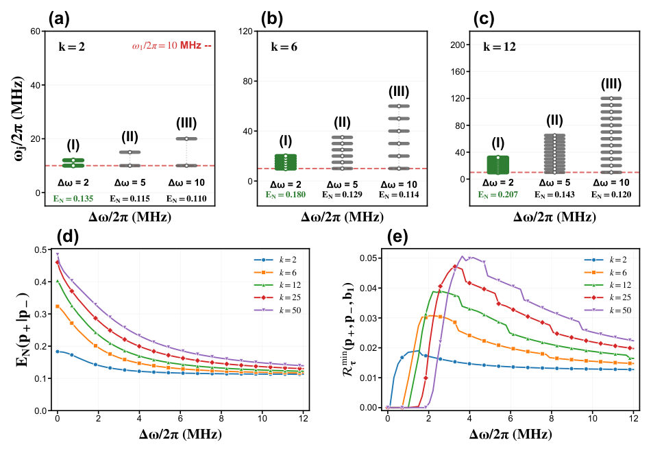
<figcaption class="paper-figure-caption"><b>Fig 2.</b> FIG. 2: Effect of the phonon frequency spacing ∆ω on the polariton-polariton entanglement and on the tripartite entan- glement. (a)-(c) Spectral configurations for k = 2, k = 6, and k = 12 phonon modes, respectively. Three spacings are considered in each panel: ∆ω/2π = 2 MHz (I), ∆ω/2π = 5 MHz (II), and ∆ω/2π = 10 MHz (III). The first phonon mode is fixed at ω1/2π = 10 MHz (dashed red line). Green bars indicate the optimal configuration maximizing EN. The corre- sponding value of EN is indicated below each configuration. (d) Bipartite entanglement E p+p− N and (e) genuine tripartite entanglement Rmin τ (p+, p−, b1) as continuous functions of the phonon frequency spacing ∆ω for k = 2, 6, 12,...</figcaption>
</figure>
<figure class="paper-figure-card">
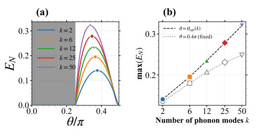
<figcaption class="paper-figure-caption"><b>Fig 3.</b> FIG. 4: (a) Stationary polariton-polariton entanglement EN as a function of the mixing angle θ for k = 2, 6, 12, 25, and 50 phonon modes. The gray region denotes the dynamically unstable regime. Markers indicate the maxi- mum EN for each k. (b) Maximum entanglement Emax N as a function of the number of phonon modes k. The parame- ters are the same as in Fig. 2.</figcaption>
</figure>
<figure class="paper-figure-card">

<figcaption class="paper-figure-caption"><b>Fig 4.</b> FIG. 3: Stability diagram of the system. (a) Stable (green) and unstable (red) regions as a function of θ for k = 2, 6, 12, 25, and 50 phonon modes at ∆+ = −∆−= ω1. The dashed line marks the stability boundary θcrit ≃π/4, which is independent of k. (b) Stability map in the detun- ing plane (∆+/ω1, ∆−/ω1) for k = 2 at θ = 0.4π. The parameters are listed in Tab. (I).</figcaption>
</figure>
<figure class="paper-figure-card">
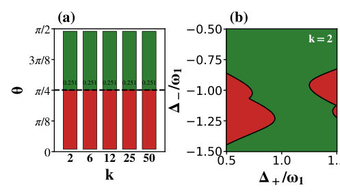
<figcaption class="paper-figure-caption"><b>Fig 5.</b> Fig. 4(a) shows the stationary polariton entanglement EN as a function of the mixing angle θ for k = 2, 6, 12, 25, and 50 phonon modes. The system is dynami- cally unstable for θ/π ≲0.25, a regime where the Stokes and anti-Stokes scattering rates are nearly balanced and no stationary entanglement can be sustained. Beyond this threshold, EN exhibits a pronounced peak whose amplitude grows monotonically with k: Emax N ≃0.14 (k = 2), 0.20 (k = 6), 0.24 (k = 12), 0.28 (k = 25), and 0.33 (k = 50), representing more than a twofold en- hancement relative to the k = 2 case. Fig. 4(b) shows Emax N as a function of k for the optimized angle θopt(k) (dashed) and for the fixed hybridization θ = 0.4π...</figcaption>
</figure>
</div>

<p><strong>Summary.</strong> The paper proposes that utilizing multiple vibrational phonon modes as parallel scattering channels can overcome the inherent limitations of linear coupling in cavity magnomechanics to generate robust quantum entanglement. This multimode mediation enhances entanglement monotonically while simultaneously inducing collective amplitude squeezing, offering a pathway for controlling quantum resources in these hybrid systems.</p>
<p><strong>Why it may be interesting.</strong> This work directly addresses open quantum systems dynamics in a complex hybrid platform, providing quantitative measures for controlling non-classical correlations (entanglement and squeezing) using engineered environmental coupling channels (phonons).</p>
<details>
<summary>Detailed structure</summary>
<p><strong>Main problem.</strong> The central challenge is generating quantum entanglement between cavity-magnon polariton modes, which are inherently limited by linear beam-splitter interactions.</p>
<p><strong>Main result.</strong> Multimode phonon mediation provides a mechanism that monotonically enhances steady-state bipartite entanglement and generates collective squeezing in the amplitude quadrature of the polaritons.</p>
<p><strong>Method.</strong> The analysis uses Quantum Langevin Equations (QLEs) linearized around the steady state to calculate quantum fluctuations, followed by solving Lyapunov equations for covariance matrix evolution.</p>
<p><strong>Model / system.</strong> The system is a cavity magnomechanical platform involving coupled microwave cavity ($   ext{a}$), magnon ($    ext{c}$), and multiple vibrational/phonon modes ($k$ modes). The coupling forms hybridized polaritons ($  ext{p}^\pm$).</p>
<p><strong>Key observables.</strong> Logarithmic negativity (bipartite entanglement, EN); minimum residual conrangle (tripartite entanglement, Rmin^tau); quantum synchronization measures ($S_c, S_x, S_\phi$)</p>
<p><strong>Important parameters / regimes.</strong> Number of phonon modes ($k$); detunings ($\Delta_\pm$); coupling strengths ($G_{0j}$); operating temperature and damping rates.</p>
<p><strong>Assumptions / limitations.</strong> The analysis assumes a dispersive interaction regime and linearizes the QLEs, neglecting higher-order fluctuation terms.</p>
<p><strong>Figures summary.</strong> Figures illustrate entanglement dependence on phonon frequency spacing and mode number; they also show robustness against temperature and damping rates, and quantify synchronization measures vs. $k$.</p>
<p><strong>Paper structure.</strong> The paper first establishes the physical model and the limitation of single-mode coupling. It then develops the theoretical framework using QLEs to analyze quantum fluctuations. The core results demonstrate how multimode phonon scattering enhances entanglement while simultaneously affecting different synchronization quadratures.</p>
</details>
<details>
<summary>Abstract</summary>
<p>The generation of quantum correlations in hybrid quantum systems remains a central challenge due to the intrinsic limitations of linear interactions. In cavity magnomechanical platforms, the cavity-magnon coupling gives rise to hybridized cavity-magnon polaritons (CMPs). However, as a beam-splitter-type interaction, it does not by itself generate entanglement between the polariton modes in the absence of additional nonlinear or parametric processes. Here, we propose a mechanism based on multimode phonon mediation, in which multiple vibrational modes act as parallel scattering channels that couple the polaritons through Stokes and anti-Stokes processes. We show that , in the parameter regime explored here, the presence of multiple phonon modes leads to a monotonic enhancement of steady-state entanglement, thereby going beyond the limitations of conventional single-mode schemes. Furthermore, we demonstrate that quantum synchronization between the polariton modes originates from the same underlying scattering processes responsible for entanglement generation, yet exhibits an opposite scaling behavior with increasing phonon number for the phase quadrature, while the amplitude synchronization reveals collective squeezing that grows with the number of phonon channels. Our results provide new insights into the role of multimode interactions in shaping quantum correlations and establish a viable pathway for controlling entanglement and collective dynamics in hybrid magnomechanical platforms.</p>
</details>
<p><sub><a href="#top">↑ back to top</a></sub></p>

<p><a id="paper-2608.06479"></a></p>
<h3 id="improving-quantum-battery-charging-via-unidirectional-quantum-jumps-to-metastable-state"><a href="http://arxiv.org/abs/2608.06479v1">Improving quantum-battery charging via unidirectional quantum jumps to metastable state</a></h3>
<p><strong>Authors:</strong> Ewelina Lange, Grzegorz Chimczak, Anna Kowalewska-Kudłaszyk, Kishore Thapliyal, Jan Peřina<br>
<strong>Type:</strong> theory · <strong>Category:</strong> other · <strong>PDF:</strong> <a href="https://arxiv.org/pdf/2608.06479v1">https://arxiv.org/pdf/2608.06479v1</a><br>
<strong>Analysis basis:</strong> full PDF text, analyzed in chunks
<strong>Topic relevance:</strong> 🔥 <code>methods for driven-dissipative</code> <strong>4/5</strong> · <code>Tavis-Cummings &amp; cavity-many-emitter</code> <strong>3/5</strong> · <code>correlated cavity matter</code> <strong>3/5</strong> · <code>driven-dissipative phase transition</code> <strong>3/5</strong> · <code>non-equilibrium dynamics</code> <strong>3/5</strong> · <code>Keldysh / 2PI / non-Gaussian methods</code> <strong>2/5</strong> · <code>correlated / nonlocal dissipation</code> <strong>2/5</strong> · <code>non-equilibrium universality</code> <strong>2/5</strong> · <code>Kondo &amp; dissipative impurity</code> <strong>1/5</strong> · <code>analog quantum simulation</code> <strong>1/5</strong> · <code>measurement-induced transitions</code> <strong>1/5</strong> · <code>quantum measurements</code> <strong>1/5</strong></p>
<div class="figure-strip-hint">↔ Scroll figures horizontally</div>
<div class="paper-figures-scroll">
<figure class="paper-figure-card">
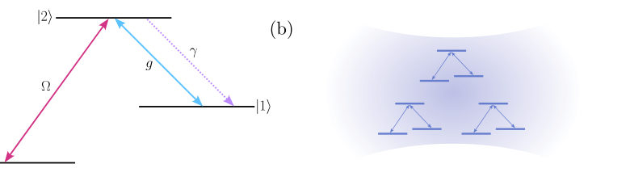
<figcaption class="paper-figure-caption"><b>Fig 1.</b> FIG. 1. (a) Diagram of the energy levels of the considered atom. N such atoms form a quantum</figcaption>
</figure>
<figure class="paper-figure-card">
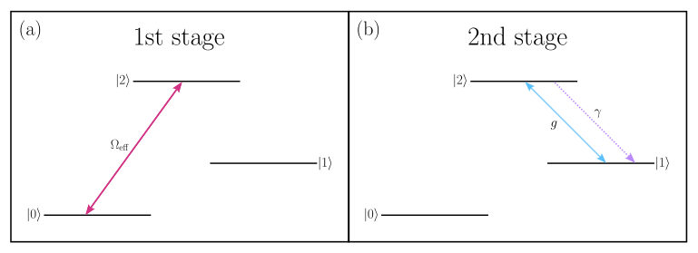
<figcaption class="paper-figure-caption"><b>Fig 2.</b> FIG. 2. The charging protocol consists of two stages. In the first stage a very intense classical laser</figcaption>
</figure>
<figure class="paper-figure-card">
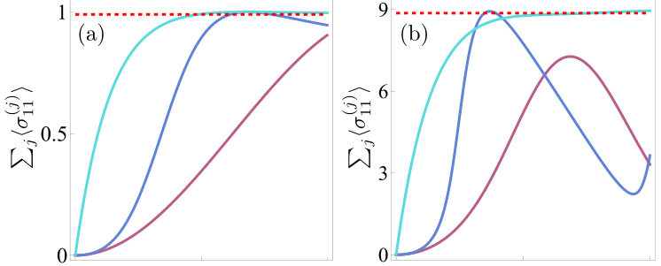
<figcaption class="paper-figure-caption"><b>Fig 3.</b> FIG. 3. The sum of populations of the metastable states calculated numerically using the Hermitian</figcaption>
</figure>
<figure class="paper-figure-card">
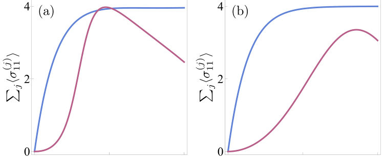
<figcaption class="paper-figure-caption"><b>Fig 4.</b> FIG. 4. The sum of populations of the metastable states calculated numerically using the non-</figcaption>
</figure>
<figure class="paper-figure-card">
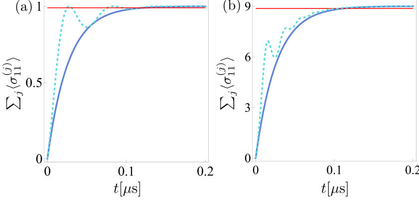
<figcaption class="paper-figure-caption"><b>Fig 5.</b> FIG. 5. Same as Fig. 3, but only solutions of the master equation (8) are shown for (γ , κ) =</figcaption>
</figure>
</div>

<p><strong>Summary.</strong> The paper proposes using a three-level atomic system configured as a quantum battery to store energy efficiently. By artificially restricting spontaneous decay paths to be unidirectional toward a metastable state, the detrimental effects of quantum jumps are converted into a constructive process that rapidly charges the battery and maximizes extractable energy.</p>
<p><strong>Why it may be interesting.</strong> This work directly addresses energy management in open quantum systems, showing how engineering dissipation pathways (reservoir engineering) can turn a source of loss into a driving force for achieving desired quantum states.</p>
<details>
<summary>Detailed structure</summary>
<p><strong>Main problem.</strong> Quantum jumps during quantum battery charging cause energy dissipation by inducing transitions from high to low energy states, hindering efficient energy storage.</p>
<p><strong>Main result.</strong> Restricting spontaneous atomic transitions to be unidirectional (excited state only decays to metastable state) makes the quantum jumps constructive, driving the system to a fully charged state and making all stored energy extractable.</p>
<p><strong>Method.</strong> The authors analyze the dynamics using master equations and compare results from full damping models against simpler coherent or non-Hermitian Hamiltonian approaches.</p>
<p><strong>Model / system.</strong> The model uses an ensemble of three-level atoms in a Lambda (Λ) configuration, designed to store energy in a metastable state. The system is coupled to an optical cavity charger.</p>
<p><strong>Key observables.</strong> Sum of populations in the metastable states ($\langle P_{n} \sum \sigma^{(j)}_{11} 
angle$), which serves as the figure of merit for storable energy, and ergotropy (extractable work).</p>
<p><strong>Important parameters / regimes.</strong> The analysis explores different parameter regimes defined by detunings ($\Delta$) and coupling strengths ($\Omega_i, g, \gamma$).</p>
<p><strong>Assumptions / limitations.</strong> The core assumption is the restriction of spontaneous transitions to be unidirectional from the excited state $|2
angle$ only to the metastable state $|1
angle$, suppressing decay to the ground state $|0
angle$.</p>
<p><strong>Figures summary.</strong> Figure 3 compares the evolution of stored energy ($\langle P_{n, j=1} \sigma^{(j)}_{11} 
angle$) over time using three different dynamic descriptions: Hermitian Hamiltonian, non-Hermitian Hamiltonian, and the full Master Equation approach.</p>
<p><strong>Paper structure.</strong> The paper first establishes the problem (energy loss via jumps) and proposes a modified $\Lambda$-system. It then develops the theoretical framework by comparing dynamics under various approximations (Hamiltonian vs. Master Equation). Finally, it demonstrates that the unidirectional jump mechanism yields constructive charging behavior.</p>
</details>
<details>
<summary>Abstract</summary>
<p>In the process of charging a quantum battery, quantum jumps play a detrimental role because they induce transitions from higher to lower energy levels, leading to energy dissipation. This be- havior directly opposes the fundamental objective of the charging protocol, which is to increase the population of higher-energy states and store usable energy in the system. Furthermore, decoherence introduced by randomness of quantum jumps leads to a mixed state, thereby reducing the amount of energy that can be extracted from the charged quantum battery. Here, we propose a quantum battery comprising an ensemble of three-level atoms in the Λ configuration to store energy in the metastable state over a long time. We demonstrate that, when spontaneous atomic transitions are restricted to occur solely from the excited state to a metastable state, with decay to the ground state completely suppressed, quantum jumps acquire a constructive character. Under these con- ditions, they drive the quantum battery to a fully charged state, render the entire stored energy extractable, and shorten the duration of the second stage of the charging protocol.</p>
</details>
<p><sub><a href="#top">↑ back to top</a></sub></p>

<p><a id="paper-2608.07083"></a></p>
<h3 id="many-body-mobility-edge-and-non-hermitian-skin-effect-in-an-interacting-quasi-periodic-spin-chain"><a href="http://arxiv.org/abs/2608.07083v1">Many-Body Mobility Edge and Non-Hermitian Skin Effect in an Interacting Quasi-Periodic Spin Chain</a></h3>
<p><strong>Authors:</strong> Lavoisier Wah, Ayan Banerjee, Flore K. Kunst<br>
<strong>Type:</strong> theory · <strong>Category:</strong> disordered systems and neural networks · <strong>PDF:</strong> <a href="https://arxiv.org/pdf/2608.07083v1">https://arxiv.org/pdf/2608.07083v1</a><br>
<strong>Analysis basis:</strong> full PDF text, analyzed in chunks
<strong>Topic relevance:</strong> 🔥 <code>analog quantum simulation</code> <strong>4/5</strong> · 🔥 <code>methods for driven-dissipative</code> <strong>4/5</strong> · <code>driven-dissipative phase transition</code> <strong>3/5</strong> · <code>exotic spin models in light-matter</code> <strong>3/5</strong> · <code>correlated / nonlocal dissipation</code> <strong>2/5</strong> · <code>entanglement &amp; information structure</code> <strong>2/5</strong> · <code>non-equilibrium dynamics</code> <strong>2/5</strong> · <code>non-equilibrium universality</code> <strong>2/5</strong> · <code>Frenkel-Kontorova</code> <strong>1/5</strong> · <code>Keldysh / 2PI / non-Gaussian methods</code> <strong>1/5</strong> · <code>Kondo &amp; dissipative impurity</code> <strong>1/5</strong></p>
<div class="figure-strip-hint">↔ Scroll figures horizontally</div>
<div class="paper-figures-scroll">
<figure class="paper-figure-card">
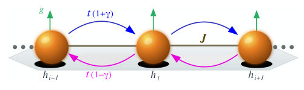
<figcaption class="paper-figure-caption"><b>Fig 1.</b> FIG. 1. Interacting NH spin chain. Schematic represen- tation of the NH spin chain with a longitudinal quasi-periodic field in Eqs. (1) and (2). The system includes asymmetric hop- pings captured by t and γ, nearest-neighbor zz-interactions (J), a transverse field (g), and an on-site longitudinal field (hi) given Eq. (3), which plays the role of disorder.</figcaption>
</figure>
<figure class="paper-figure-card">
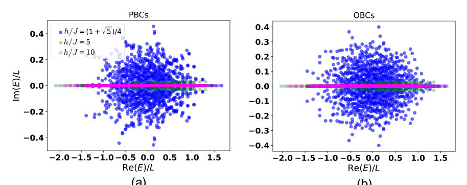
<figcaption class="paper-figure-caption"><b>Fig 2.</b> FIG. 2. Energy spectrum. We plot the spectrum per spin of the model in Eqs. (1)-(3) under (a) PBCs and (b) OBCs on the complex plane for h/J = (1 + √</figcaption>
</figure>
<figure class="paper-figure-card">
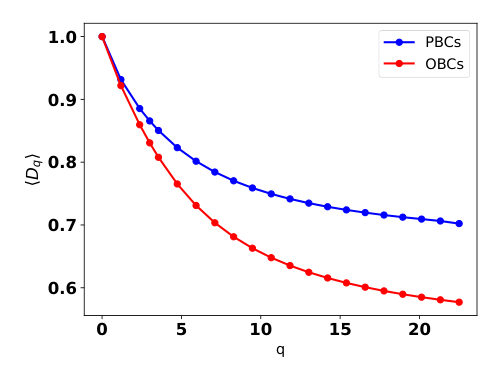
<figcaption class="paper-figure-caption"><b>Fig 3.</b> FIG. 3. Scaling of the mean multifractal dimension ⟨Dq⟩. We plot the average multifractal dimension ⟨Dq⟩in PBCs (blue) and OBCs (red) as a function of q for L = 10, J = 1, t/J = 1/ √</figcaption>
</figure>
<figure class="paper-figure-card">
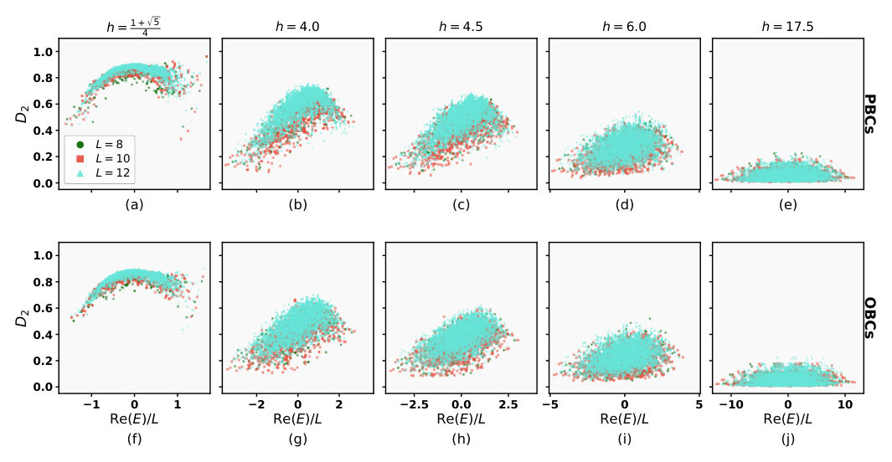
<figcaption class="paper-figure-caption"><b>Fig 4.</b> FIG. 4. Multifractal dimension D2. Fractal dimension D2 as a function of the real energy density: Re(E)/L for system sizes L = 8 (green), L = 10 (red), and L = 12 (cyan), under PBCs [(a)–(e)] and OBCs [(f)–(j)], at five representative values of the quasiperiodic amplitude h. (a), (f) h = (1 + √</figcaption>
</figure>
<figure class="paper-figure-card">
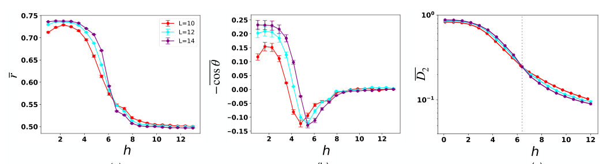
<figcaption class="paper-figure-caption"><b>Fig 5.</b> FIG. 5. Delocalized-to-MBL phase transition. We plot (a) the mean gap ratio ¯r, (b) the angular statistics −cos θ, and (c) the average multifractal dimension D2 as a function of the disorder h for different system sizes. One observes that the crossing point of the curves (see (a) and (c)), which is the transition point, falls within the region of h, where the MBME is predicted to occur. The universality class of the model changes from Ginibre ensemble statistics in the delocalized regime to Poisson statistics in the localized regime. This suggest a disorder-induced spectral localization transition. We consider 1000, 600 and 400 values of ϕ for L = 10, 12 and 14, respectively. The transition...</figcaption>
</figure>
</div>

<p><strong>Summary.</strong> This paper explores how interactions, quasi-periodicity, and non-Hermitian physics combine to govern transport in spin chains. The key finding is the identification of a unique "D-shaped" mobility edge that separates different quantum phases. It provides a comprehensive phase diagram capturing both many-body localization and boundary-induced skin effects.</p>
<p><strong>Why it may be interesting.</strong> This work directly addresses the intersection of non-Hermiticity and localization in interacting systems, which is highly relevant for understanding open quantum systems where boundary effects (like skin effect) compete with intrinsic disorder-induced localization.</p>
<details>
<summary>Detailed structure</summary>
<p><strong>Main problem.</strong> The study investigates the complex interplay between non-Hermiticity, interactions, quasi-periodicity, and localization mechanisms in many-body quantum spin chains.</p>
<p><strong>Main result.</strong> The authors discover a characteristic "D-shaped" many-body mobility edge that governs transitions between extended, localized (MBL), and skin effect regimes. They also confirm the signature of the many-body skin effect via multifractal scaling.</p>
<p><strong>Method.</strong> The research employs advanced numerical diagnostics such as fractal dimension ($D_q$), complex eigenvalue fractions, and analyzing finite-size flow directions of spectral measures.</p>
<p><strong>Model / system.</strong> The model is an interacting non-Hermitian spin chain subjected to a quasi-periodic longitudinal field. The Hamiltonian incorporates hopping terms, nearest-neighbor Ising interactions ($J$), and the disorder/quasi-periodicity ($h_i$).</p>
<p><strong>Key observables.</strong> Many-body mobility edge (MBME), many-body skin effect (MBSE) signature, fractal dimension ($\langle D_q 
angle$), complex eigenvalue fractions, density imbalance, and entanglement growth.</p>
<p><strong>Important parameters / regimes.</strong> Non-Hermitian asymmetry parameter ($\gamma$), interaction strength ($J$), quasi-periodic field amplitude ($h$), and the irrationality parameter $\alpha$.</p>
<p><strong>Assumptions / limitations.</strong> The analysis relies on mapping out a unified phase diagram by varying disorder strength ($h$) while keeping other parameters fixed or within specific regimes.</p>
<p><strong>Figures summary.</strong> Figures illustrate the energy spectrum in the complex plane for different disorder strengths and plots the energy-resolved multifractal dimension $D_2$ to map the mobility edge structure.</p>
<p><strong>Paper structure.</strong> The paper systematically analyzes the spectral properties (PBC vs. OBC) using diagnostics like fractal dimensions, mapping out a unified phase diagram that captures transitions between MBL and MBSE regimes as disorder strength is varied.</p>
</details>
<details>
<summary>Abstract</summary>
<p>Non-Hermitian many-body physics reveals a rich interplay between topology, localization, and boundary effects, yet their collective behavior in interacting disordered systems remains largely unexplored. In this work, we study an interacting non-Hermitian spin chain subject to a quasi-periodic longitudinal field, providing a unified and controlled setting, where non-Hermitian dynamics, interactions, and localization mechanisms intertwine. Remarkably, we discover a "D-shaped" many-body mobility edge that separates extended and localized eigenstates, while simultaneously delineating regimes of many-body localization and the many-body skin effect (where many-body eigenstates acquire an anomalous drift towards a boundary under open boundaries) emerging from the combined action of interactions, non-Hermiticity, and driving amplitude. We demonstrate that the skin effect induces multifractal scaling in the non-Hermitian eigenstates, providing a clear signature of the many-body skin effect. Employing diagnostics such as the fractal dimension, complex eigenvalue fractions, and many-body inverse participation ratios, we map out a unified phase diagram in which all measures consistently identify the "D-shaped" mobility edge. Finally, we probe this interplay using both complex level-spacing statistics and dynamical observables such as density imbalance, entanglement growth, and wave-packet evolution, culminating in a rich many-body mobility phase diagram that captures both the many-body skin effect and localization transitions. Our results identify a clear, defining signature of the "D-shaped" many-body mobility edge, and underscore its pivotal role in shaping the physics of open quantum many-body systems.</p>
</details>
<p><sub><a href="#top">↑ back to top</a></sub></p>

<p><a id="paper-2608.07211"></a></p>
<h3 id="observation-of-far-from-equilibrium-scaling-in-the-transient-dynamics-of-2d-quantum-magnets"><a href="http://arxiv.org/abs/2608.07211v1">Observation of far-from-equilibrium scaling in the transient dynamics of 2D quantum magnets</a></h3>
<p><strong>Authors:</strong> Fabio Bensch, Umberto Borla, Federico Balducci, Philip Osterholz, Shuanghong Tang, Silpa Baburaj Sheela, Anushya Chandran, Roderich Moessner, Jad C. Halimeh, Christian Groß<br>
<strong>Type:</strong> both · <strong>Category:</strong> other · <strong>PDF:</strong> <a href="https://arxiv.org/pdf/2608.07211v1">https://arxiv.org/pdf/2608.07211v1</a><br>
<strong>Analysis basis:</strong> full PDF text, analyzed in chunks
<strong>Topic relevance:</strong> 🔥 <code>analog quantum simulation</code> <strong>4/5</strong> · 🔥 <code>non-equilibrium dynamics</code> <strong>4/5</strong> · 🔥 <code>non-equilibrium universality</code> <strong>4/5</strong> · <code>Rydberg arrays</code> <strong>3/5</strong> · <code>exotic spin models in light-matter</code> <strong>3/5</strong> · <code>methods for driven-dissipative</code> <strong>3/5</strong> · <code>Keldysh / 2PI / non-Gaussian methods</code> <strong>1/5</strong> · <code>correlated / nonlocal dissipation</code> <strong>1/5</strong> · <code>driven-dissipative phase transition</code> <strong>1/5</strong> · <code>entanglement &amp; information structure</code> <strong>1/5</strong></p>
<div class="figure-strip-hint">↔ Scroll figures horizontally</div>
<div class="paper-figures-scroll">
<figure class="paper-figure-card">
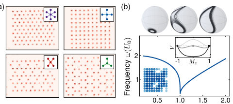
<figcaption class="paper-figure-caption"><b>Fig 1.</b> FIG. 1. Illustration of the experimental system and MF in- terpretation. (a) Average fluorescence images (red indicates more photon counts per camera pixel) for the four different lattice geometries studied here. The insets highlight the dif- ferent local connectivity of the lattices. (b) MF dynamics for the square lattice with nearest-neighbor interactions. At the top, trajectories of the mean magnetization vector are il- lustrated for transverse fields of Ω/U0 = 0.5, 1.0 and 1.5 and zero longitudinal field. The individual trajectories correspond to different initial states. The plot below shows the predicted mode softening of the post-quench oscillation frequency as a function of the...</figcaption>
</figure>
<figure class="paper-figure-card">
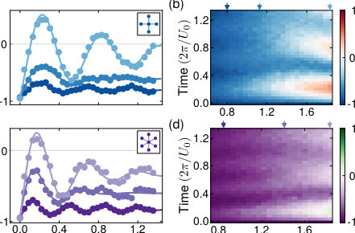
<figcaption class="paper-figure-caption"><b>Fig 2.</b> FIG. 2. Post-quench magnetization dynamics of Mz in square and triangular lattices, row-wise as identified by the pictogram-insets in (a) and (c). (a) Square lattice magnetiza- tion traces for Ω/U0 = 0.8, 1.3 and 1.8, from darker to lighter color. The fits are shown as solid lines and the zero crossing of the magnetization is indicated by the light gray line. (b),(d) Color plots of the square (b) and triangular (d) lattice dy- namics. The arrows on top indicate the three values of Ω/U0 shown in (a) and (c). (c) Triangular lattice analog of (a) for Ω/U0 = 0.9, 1.4 and 1.8. In both cases the three values lie in the interaction-dominated regime, near the crossover, and in the field-dominated...</figcaption>
</figure>
<figure class="paper-figure-card">
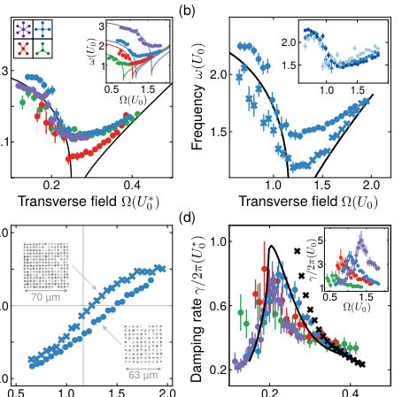
<figcaption class="paper-figure-caption"><b>Fig 3.</b> FIG. 3. Mode softening and damping. Colors indicate the different lattices as shown by the upper right inset in (a). (a) Magnetization oscillation frequency ω for the four lat- tice geometries. Solid lines are the MF predictions at zero longitudinal field. The inset shows the unscaled data, while in the main panel both axes are scaled by the coordination- number-weighted interaction strength U ∗ 0 . (b), (c) Finite- size effects: comparison of the 10 × 10 (circles) and 15 × 15 (crosses) square lattices, for the oscillation frequency (b) and the maximum magnetization swing (c). The mode soften- ing is more pronounced for the larger array. The inset of (b) compares the measured frequencies...</figcaption>
</figure>
<figure class="paper-figure-card">
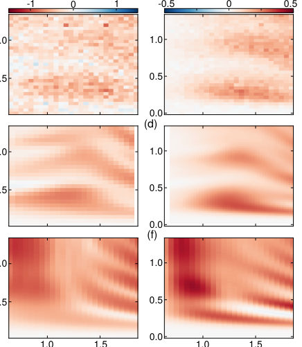
<figcaption class="paper-figure-caption"><b>Fig 4.</b> FIG. 4. Fluctuations and correlations in the 10 × 10 square array: the TTN simulations reproduce the measurements, while the DTWA breaks down in the interaction-dominated regime. The base-10 logarithm of the normalized variance of the magnetization, log10(var( ˆ Mz)), is shown in the left column such that zero corresponds to the variance of non- interacting spins. (a) is the experimental data, (c) the TTN simulation, and (e) the DTWA result. In the right column we show the nearest-neighbor connected correlator C(1) in the same order as before, that is, (b), the experimental data, (d), the TTN simulation, and (f), the DTWA result.</figcaption>
</figure>
</div>

<p><strong>Summary.</strong> The authors study how 2D quantum magnets behave immediately after a sudden change (quench) in their environment. Using Rydberg atoms to simulate the transverse-field Ising model on various lattices, they observe that the dynamics follow universal scaling laws. This suggests that even with complex interactions and strong fluctuations, the system's collective behavior can be described by simple, overarching principles.</p>
<p><strong>Why it may be interesting.</strong> This work bridges cold atom platforms with fundamental condensed matter physics problems, providing quantitative evidence for emergent collective behaviors in strongly correlated quantum systems far from equilibrium.</p>
<details>
<summary>Detailed structure</summary>
<p><strong>Main problem.</strong> Investigating the organizing principles governing the transient, far-from-equilibrium dynamics of two-dimensional quantum magnets.</p>
<p><strong>Main result.</strong> The system exhibits a robust scaling regime where oscillation frequencies and damping rates collapse onto common curves despite varying lattice geometries. The dominant dynamics appear governed by a simple collective description even when strong quantum fluctuations are present.</p>
<p><strong>Method.</strong> A combination of experimental realization using programmable Rydberg-atom arrays, theoretical modeling via Mean-Field theory extensions (accounting for edge effects), and advanced numerical simulations like Tree-Tensor-Networks.</p>
<p><strong>Model / system.</strong> The transverse-field Ising model is realized on various 2D lattices (honeycomb, square, kagome, triangular) using Rydberg atoms. The dynamics are studied following a global quench from a fully magnetized state.</p>
<p><strong>Key observables.</strong> Transient magnetization oscillation frequency ($\omega$), damping rate ($\gamma$), and the crossover point between interaction- and field-dominated regimes.</p>
<p><strong>Important parameters / regimes.</strong> Transverse field strength ($\Omega$) relative to interaction strength ($U_0$), lattice coordination number, and finite-size effects (bulk vs. edge populations).</p>
<p><strong>Assumptions / limitations.</strong> The Mean-Field approach provides a good description of the global dynamics, even though correlated quantum fluctuations are necessary for accurate damping predictions.</p>
<p><strong>Figures summary.</strong> Figures illustrate the four studied lattice geometries, show mode softening curves ($\omega$ vs $\Omega$) across different lattices demonstrating scaling collapse, and compare MF predictions with TTN simulations showing magnetization evolution over time.</p>
<p><strong>Paper structure.</strong> The paper establishes the problem in non-equilibrium quantum dynamics, presents experimental results on multiple lattices showing universal scaling behavior, compares this to theoretical models (MF), and uses advanced simulations (TTN) to confirm the role of collective descriptions despite strong correlations.</p>
</details>
<details>
<summary>Abstract</summary>
<p>The transient regime of far-from-equilibrium quantum many-body dynamics lacks the established organizing principles that universality and scaling provide in equilibrium. It is least understood for two-dimensional short-range interacting systems, where mean-field arguments are not expected to hold, controlled theoretical descriptions are few, and fluctuations are strong. Here we investigate the quench dynamics of the transverse-field Ising model using programmable Rydberg-atom arrays realizing honeycomb, square, kagome, and triangular lattices. Starting from a fully magnetized state, we observe a pronounced softening of the dominant collective magnetization oscillation accompanied by a maximum in the damping rate, signaling a crossover between interaction- and field-dominated transient dynamics. Even though the microscopic lattice geometries are different, both the oscillation frequencies and the damping rates collapse onto common curves after being rescaled by the coordination-number-weighted interaction strength. Our findings show that a mean-field description effectively reproduces the magnetization oscillations. The importance of correlated quantum fluctuations is underlined by the failure of the discrete truncated Wigner approximation to predict the damping for strong interactions, while tree-tensor-network simulations reproduce the dynamics accurately. These results reveal a robust scaling regime governing the transient dynamics of short-range interacting two-dimensional quantum magnets. They reveal that the dominant transient dynamics is governed by a simple collective description despite the presence of strong quantum fluctuations --- an important insight in the quest to uncover organizing principles in far-from-equilibrium quantum matter.</p>
</details>
<p><sub><a href="#top">↑ back to top</a></sub></p>

<p><a id="paper-2608.06459"></a></p>
<h3 id="kpz-superdiffusion-of-local-correlators-in-diffusive-random-quantum-circuits"><a href="http://arxiv.org/abs/2608.06459v1">KPZ Superdiffusion of Local Correlators in Diffusive Random Quantum Circuits</a></h3>
<p><strong>Authors:</strong> Ewan McCulloch<br>
<strong>Type:</strong> theory · <strong>Category:</strong> disordered systems and neural networks · <strong>PDF:</strong> <a href="https://arxiv.org/pdf/2608.06459v1">https://arxiv.org/pdf/2608.06459v1</a><br>
<strong>Analysis basis:</strong> full PDF text, analyzed in chunks
<strong>Topic relevance:</strong> 🔥 <code>non-equilibrium universality</code> <strong>4/5</strong> · <code>analog quantum simulation</code> <strong>3/5</strong> · <code>correlated / nonlocal dissipation</code> <strong>3/5</strong> · <code>driven-dissipative phase transition</code> <strong>3/5</strong> · <code>methods for driven-dissipative</code> <strong>3/5</strong> · <code>non-equilibrium dynamics</code> <strong>3/5</strong> · <code>Keldysh / 2PI / non-Gaussian methods</code> <strong>2/5</strong> · <code>Kondo &amp; dissipative impurity</code> <strong>1/5</strong> · <code>entanglement &amp; information structure</code> <strong>1/5</strong> · <code>scars &amp; prethermalization</code> <strong>1/5</strong></p>
<div class="figure-strip-hint">↔ Scroll figures horizontally</div>
<div class="paper-figures-scroll">
<figure class="paper-figure-card">
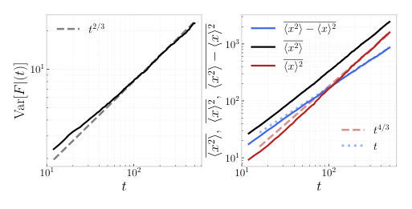
<figcaption class="paper-figure-caption"><b>Fig 1.</b> FIG. 1. KPZ scaling of Green’s functions at strong noise. TEBD simulations of noisy operator dynamics at γ ≈ 0.667, averaged over N ≈5000 circuit samples, showing the expected KPZ scaling exponents in Eq. (4) (dashed guides).</figcaption>
</figure>
<figure class="paper-figure-card">
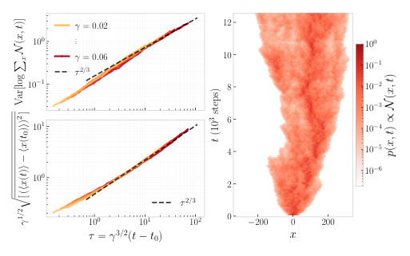
<figcaption class="paper-figure-caption"><b>Fig 2.</b> FIG. 2. Weak-noise scaling of phase-annealed norm N. TEBD simulations of the full two-copy transfer matrix dynamics, for bath density ν = 1/3 and coupling strengths γ ∈[0.02, 0.06], using N = 1500 disorder samples. Left: free-energy fluctuations and endpoint wandering with growth consistent with the KPZ exponent 1/z = 2/3 (guides). Right: representative endpoint distribution p(x, t) ∝N(x, t) in a sin- gle disorder sample.</figcaption>
</figure>
</div>

<p><strong>Summary.</strong> This work analyzes how quantum information decays in random unitary circuits by studying the single-particle Green's function. The authors find that this decay process exhibits universal Kardar-Parisi-Zhang (KPZ) scaling in certain limits. They develop sophisticated theoretical tools, including mapping to directed polymer models, to describe these non-equilibrium dynamics.</p>
<p><strong>Why it may be interesting.</strong> The connection of quantum coherence decay in random circuits to universal scaling laws like KPZ is highly relevant for understanding decoherence mechanisms in disordered quantum systems, bridging condensed matter physics with non-equilibrium statistical mechanics.</p>
<details>
<summary>Detailed structure</summary>
<p><strong>Main problem.</strong> The study investigates the long-time dynamics of quantum coherence decay in random unitary circuits, contrasting standard hydrodynamic descriptions with non-equilibrium scaling laws.</p>
<p><strong>Main result.</strong> The system exhibits Kardar-Parisi-Zhang (KPZ) scaling exponents in its wandering statistics in the strong noise limit, and a crossover to an effective directed polymer description in the weak noise limit.</p>
<p><strong>Method.</strong> The analysis employs mapping techniques, deriving effective continuum theories (like Directed Waves in Random Media or Macroscopic Fluctuation Theory actions), and utilizing tensor-network simulations for numerical confirmation.</p>
<p><strong>Model / system.</strong> The model is a one-dimensional particle-number-conserving random unitary circuit coupled to an external bath. The dynamics are tracked via the single-particle Green's function G(x,t) and its associated spatial distribution p(x,t).</p>
<p><strong>Key observables.</strong> Green's function G(x,t), normalized spatial distribution p(x,t), free energy fluctuations ($   ext{Var}[F(t)]$), and the center wandering $\langle x(t)
angle$.</p>
<p><strong>Important parameters / regimes.</strong> Noise parameter ($\gamma$), time ($t$), and length scales related to disorder strength.</p>
<p><strong>Assumptions / limitations.</strong> The strong-noise limit assumes collapse onto single-particle coherence, while the weak-noise analysis relies on projecting dynamics onto a source-manifold ansatz leading to an effective directed polymer description.</p>
<p><strong>Figures summary.</strong> Figure 1 numerically confirms KPZ scaling exponents in TEBD simulations at moderate noise. Figure 2 shows variance collapse consistent with KPZ exponent 1/z = 2/3 for the weak-noise norm N.</p>
<p><strong>Paper structure.</strong> The paper progresses from analyzing the general Green's function dynamics, establishing KPZ scaling in the strong limit, to deriving a low-energy effective theory using phase averaging and Macroscopic Fluctuation Theory in the weak noise regime. It concludes by confirming that the final coarse-grained amplitude matches typical single-particle behavior.</p>
</details>
<details>
<summary>Abstract</summary>
<p>We study the single-particle Green's function $G(x,t)=\langle σ^-_x(0)σ^+_0(t)\rangle$ in one-dimensional particle-number-conserving random unitary circuits coupled to an external bath. For fixed spacetime disorder, we argue that $G(x,t)$ is governed, in both the strong- and weak-noise limits, by directed waves in a random medium. We find Kardar-Parisi-Zhang (KPZ) scaling in the wandering statistics of the normalized spatial distribution $p(x,t)\propto |G(x,t)|^2$ and in the associated free energy. In particular, its center $\langle x(t)\rangle\equiv\sum_x x\, p(x,t)$ wanders on a length-scale $\mathcal{O}(t^{2/3})$, while sample-to-sample fluctuations of $-\log\sum_x |G(x,t)|^2$ scale as $t^{1/3}$. At weak noise $γ\ll 1$, the crossover to the strong-disorder fixed point occurs at a parametrically long time $\mathcal{O}(γ^{-3/2})$. These predictions are confirmed numerically using tensor-network simulations of the noisy operator dynamics in individual circuits at moderate noise, and of a phase-annealed proxy retaining hopping disorder at weak noise.</p>
</details>
<p><sub><a href="#top">↑ back to top</a></sub></p>

<p><a id="paper-2608.07253"></a></p>
<h3 id="theory-of-deterministic-photon-loss-subspaces-for-quantum-interferences"><a href="http://arxiv.org/abs/2608.07253v1">Theory of Deterministic Photon-Loss Subspaces for Quantum Interferences</a></h3>
<p><strong>Authors:</strong> Yadi Niu, Haoyang Zhang, Zihan Mo, Nuo Wang, Ying Gu<br>
<strong>Type:</strong> theory · <strong>Category:</strong> other · <strong>PDF:</strong> <a href="https://arxiv.org/pdf/2608.07253v1">https://arxiv.org/pdf/2608.07253v1</a><br>
<strong>Analysis basis:</strong> full PDF text, analyzed in chunks
<strong>Topic relevance:</strong> 🔥 <code>methods for driven-dissipative</code> <strong>4/5</strong> · <code>correlated / nonlocal dissipation</code> <strong>3/5</strong> · <code>driven-dissipative phase transition</code> <strong>3/5</strong> · <code>interference shaping light</code> <strong>3/5</strong> · <code>non-equilibrium dynamics</code> <strong>2/5</strong> · <code>non-equilibrium universality</code> <strong>2/5</strong> · <code>Keldysh / 2PI / non-Gaussian methods</code> <strong>1/5</strong> · <code>analog quantum simulation</code> <strong>1/5</strong> · <code>entanglement &amp; information structure</code> <strong>1/5</strong> · <code>measurement-induced transitions</code> <strong>1/5</strong> · <code>quantum measurements</code> <strong>1/5</strong></p>
<div class="figure-strip-hint">↔ Scroll figures horizontally</div>
<div class="paper-figures-scroll">
<figure class="paper-figure-card">
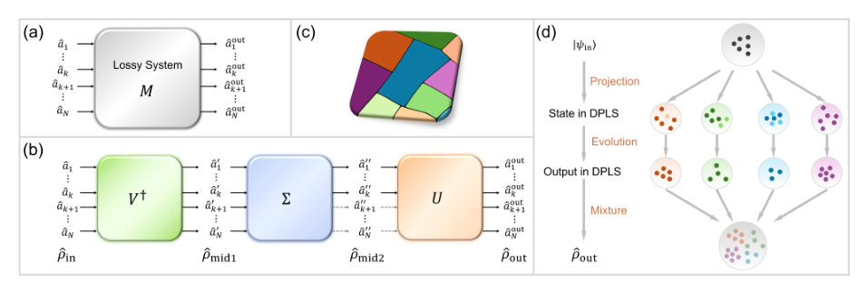
<figcaption class="paper-figure-caption"><b>Fig 1.</b> FIG. 1. Schematic of DPLS theory. (a) Lossy linear optical system with 𝑁input and 𝑁output</figcaption>
</figure>
<figure class="paper-figure-card">
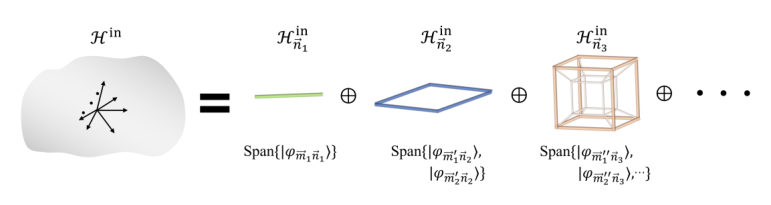
<figcaption class="paper-figure-caption"><b>Fig 2.</b> FIG. 2. Schematic of decomposing the input Hilbert space into DPLSs Hin ®𝑛1, Hin ®𝑛2, Hin ®𝑛3, · · · . Basis</figcaption>
</figure>
<figure class="paper-figure-card">
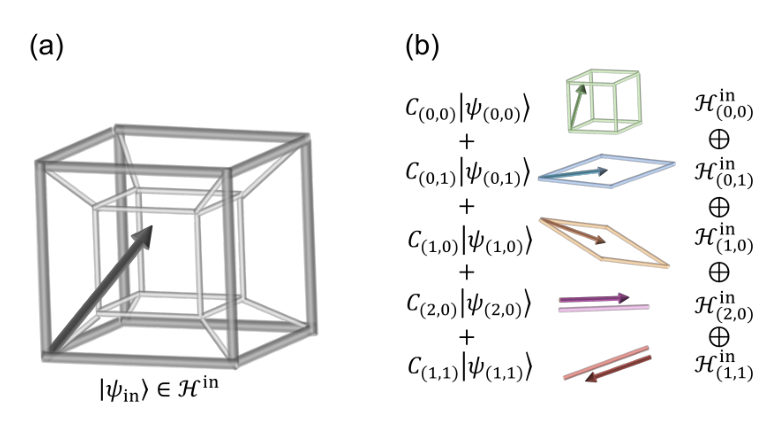
<figcaption class="paper-figure-caption"><b>Fig 3.</b> FIG. 3. Schematic of the input state |𝜓in⟩= |1100⟩projecting into different DPLSs. (a) Input</figcaption>
</figure>
<figure class="paper-figure-card">
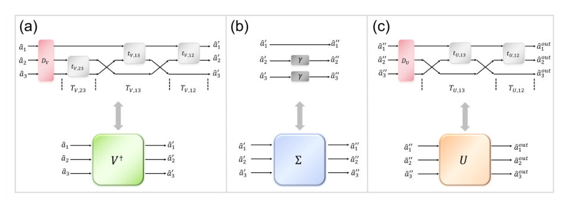
<figcaption class="paper-figure-caption"><b>Fig 4.</b> FIG. 4. Constructed lossy system for robust W-state generation with three sequential parts: (a)</figcaption>
</figure>
<figure class="paper-figure-card">
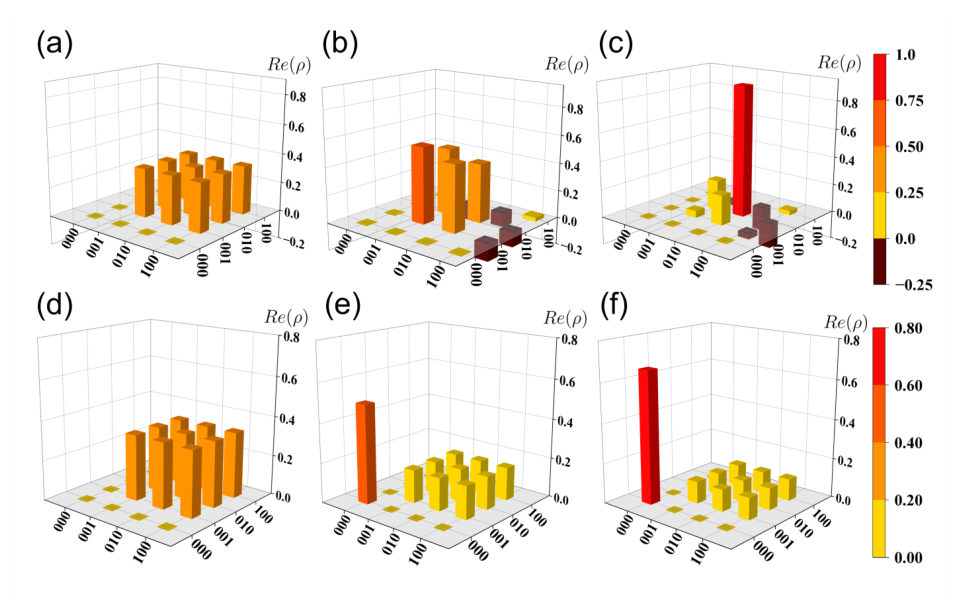
<figcaption class="paper-figure-caption"><b>Fig 5.</b> FIG. 5. Preparation of W-state in lossless system and lossy system, x axis and y axis correspond</figcaption>
</figure>
</div>

<p><strong>Summary.</strong> The paper introduces the Deterministic Photon-Loss Subspace (DPLS) theory to analyze quantum light evolution in lossy optical systems. By using SVD on the system's scattering matrix, it decomposes the input state into orthogonal subspaces where photon loss is deterministic and coherence evolves unitarily within each subspace. This framework allows for precise control over interference phenomena by engineering the engineered loss channels.</p>
<p><strong>Why it may be interesting.</strong> This work is highly relevant for theoretical physicists in quantum optics and open quantum systems as it provides a systematic mathematical tool (DPLS) to disentangle and quantify the distinct physical processes—coherence preservation vs. decoherence/loss—that occur simultaneously in realistic, dissipative photonic setups.</p>
<details>
<summary>Detailed structure</summary>
<p><strong>Main problem.</strong> The core problem is understanding how quantum coherence, decoherence, and photon number reduction interact to govern the evolution of light in linear optical systems subject to loss.</p>
<p><strong>Main result.</strong> The authors propose the Deterministic Photon-Loss Subspace (DPLS) theory, which allows for a rigorous analysis of state evolution by decomposing the input Hilbert space into orthogonal subspaces where loss is deterministic and coherence is preserved within projections.</p>
<p><strong>Method.</strong> The method relies on applying Singular Value Decomposition (SVD) to the system's scattering matrix, defining DPLSs based on photon numbers in completely lossy versus lossless modes.</p>
<p><strong>Model / system.</strong> The model is a general linear lossy optical system characterized by a non-unitary scattering matrix M. The theory extends this analysis by embedding the system into larger matrices to handle arbitrary singular values between 0 and 1, ensuring the resulting structure retains only {0, 1} singular values.</p>
<p><strong>Key observables.</strong> The output quantum state (a statistical mixture), the degree of coherence preservation within DPLSs, and the ability to generate specific entangled states like W-states.</p>
<p><strong>Important parameters / regimes.</strong> Singular values ($\sigma$) of the scattering matrix M, which determine if a mode is lossless ($\sigma=1$), completely lossy ($\sigma=0$), or partially lossy ($\sigma \in (0, 1)$).</p>
<p><strong>Assumptions / limitations.</strong> The theory assumes that the input Hilbert space can be decomposed into an orthogonal direct sum of DPLSs, which is mathematically enforced by extending the system matrix to restrict singular values to {0, 1}.</p>
<p><strong>Figures summary.</strong> Figures schematically illustrate the SVD decomposition process for state evolution in lossy systems, showing the projection onto DPLSs, deterministic photon dissipation in lossy modes, and unitary evolution in lossless modes.</p>
<p><strong>Paper structure.</strong> The paper first establishes the theory for systems with singular values {0, 1} by defining DPLSs via SVD. It then extends this framework to general lossy systems ($\sigma \in [0, 1]$) by embedding the system into a larger matrix such that the effective structure only contains {0, 1} singular values.</p>
</details>
<details>
<summary>Abstract</summary>
<p>Quantum coherence, quantum decoherence, and photon number reduction are coexistent in linear lossy optical systems. However, how these three elements combine together to determine the evolution of the quantum light remains unclear. Here, based on singular value decomposition (SVD), we propose the theory of deterministic photon-loss subspace (DPLS) for quantum interferences in lossy systems. By performing an SVD of scattering matrices with singular values either 0 or 1, a series of completely lossy and lossless input modes are first defined. According to n_1,...,n_i photons in the first,..., i-th lossy modes, the Hilbert space of the input states can be decomposed into a set of orthogonal subspaces H_((n_1,...,n_i ))^in, i.e., deterministic photon-loss subspaces (DPLSs). When the concept of DPLS is established, the input state can be projected onto these DPLSs. In each DPLS, the photons in lossy modes will be completely dissipated, while those in lossless modes experience a unitary evolution. The output state is a statistical mixture of the evolved outcomes of all projections, since decoherence is a concurrent process. Then, based on the DPLS theory, we not only revisited Anti-HOM interference and the distillation of quantum states, but also demonstrate a robust W-state generation for various input states in a three-port lossy system with one-dimensional DPLSs. Through investigating the loss-induced subspace structure of the system, our general theory for analyzing quantum state evolution in lossy systems explicitly reveals the interplay among quantum coherence, quantum decoherence, and photon number reduction. By engineering the loss, the constructed DPLSs can be used to precisely control quantum interferences in dissipative systems, with potential applications in quantum state preparation, quantum logic operations, and other quantum information processes.</p>
</details>
<p><sub><a href="#top">↑ back to top</a></sub></p>

<p><a id="paper-2608.07465"></a></p>
<h3 id="entanglement-mpemba-effect"><a href="http://arxiv.org/abs/2608.07465v1">Entanglement Mpemba Effect</a></h3>
<p><strong>Authors:</strong> Ruicheng Bao, Yue Liu<br>
<strong>Type:</strong> theory · <strong>Category:</strong> statistical mechanics · <strong>PDF:</strong> <a href="https://arxiv.org/pdf/2608.07465v1">https://arxiv.org/pdf/2608.07465v1</a><br>
<strong>Analysis basis:</strong> full PDF text, analyzed in chunks
<strong>Topic relevance:</strong> 🔥 <code>entanglement &amp; information structure</code> <strong>4/5</strong> · <code>correlated / nonlocal dissipation</code> <strong>3/5</strong> · <code>driven-dissipative phase transition</code> <strong>3/5</strong> · <code>methods for driven-dissipative</code> <strong>3/5</strong> · <code>non-equilibrium dynamics</code> <strong>3/5</strong> · <code>non-equilibrium universality</code> <strong>2/5</strong> · <code>Keldysh / 2PI / non-Gaussian methods</code> <strong>1/5</strong> · <code>analog quantum simulation</code> <strong>1/5</strong> · <code>scars &amp; prethermalization</code> <strong>1/5</strong></p>
<div class="figure-strip-hint">↔ Scroll figures horizontally</div>
<div class="paper-figures-scroll">
<figure class="paper-figure-card">
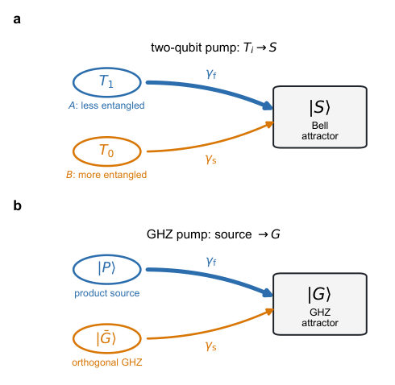
<figcaption class="paper-figure-caption"><b>Fig 1.</b> FIG. 1. (a) A two-qubit generator pumps the product source T1 rapidly and the orthogonal Bell source T0 slowly into the singlet. (b) The same construction pumps a product source and an orthogonal GHZ state into a common GHZ attractor. In both cases all channels are present for both preparations; the initial support selects the active one.</figcaption>
</figure>
<figure class="paper-figure-card">
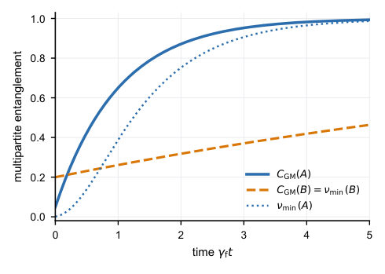
<figcaption class="paper-figure-caption"><b>Fig 2.</b> FIG. 3. The initially less-entangled fast state overtakes the slow state for both genuine multipartite concurrence and the minimum normalized one-versus-two cut negativity. The two measures follow inequivalent fast branches.</figcaption>
</figure>
<figure class="paper-figure-card">
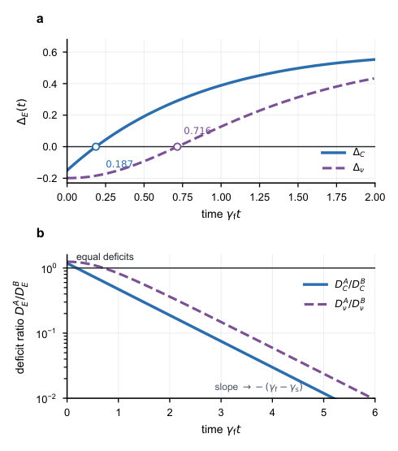
<figcaption class="paper-figure-caption"><b>Fig 3.</b> FIG. 2. (a) Concurrence and normalized negativity reverse their initial ordering at different times under the same gen- erator. (b) The ratios of the individual deficits decay with the visible-rate difference γf −γs, as predicted by the spectral criterion.</figcaption>
</figure>
</div>

<p><strong>Summary.</strong> The paper introduces the entanglement Mpemba effect, demonstrating that an initially less entangled state can surpass a more entangled one under constant open-system evolution. It derives rigorous spectral criteria based on system dynamics and proposes this phenomenon as a method to significantly speed up the preparation of highly entangled quantum states using trapped ions.</p>
<p><strong>Why it may be interesting.</strong> This work directly bridges non-equilibrium thermodynamics (the Mpemba effect) with quantum information theory by showing how initial state engineering can accelerate the approach to entangled steady states in open quantum systems, which is highly relevant for quantum control and computation.</p>
<details>
<summary>Detailed structure</summary>
<p><strong>Main problem.</strong> The paper investigates the 'entanglement Mpemba effect,' determining if an initially less entangled quantum state can overtake a more entangled state while both evolve under identical open-system dynamics.</p>
<p><strong>Main result.</strong> The effect is characterized by a spectral criterion derived from the asymptotic behavior of entanglement differences, and it provides a route for faster preparation of high entanglement via initial-state engineering.</p>
<p><strong>Method.</strong> Theoretical analysis involving the Liouville expansion to derive asymptotic comparison spectra for entanglement monotones, supplemented by an LOCC reachability preorder certificate.</p>
<p><strong>Model / system.</strong> General finite-dimensional multipartite quantum systems evolving under time-homogeneous open dynamics governed by a Lindblad dissipator. Specific realizations include two- and three-qubit models and trapped-ion protocols.</p>
<p><strong>Key observables.</strong> Entanglement monotones (e.g., concurrence, negativity), the ordering difference $\Delta E(t)$, and the first hitting time to an entanglement threshold.</p>
<p><strong>Important parameters / regimes.</strong> Decay rates ($r$), amplitudes ($K_E$), and Jordan-block powers ($q_E$) derived from the asymptotic expansion of the state evolution.</p>
<p><strong>Assumptions / limitations.</strong> The spectral criterion is sufficient but not necessary for the Mpemba effect; the analysis assumes a common branch where the exponential expansion applies.</p>
<p><strong>Figures summary.</strong> Figures illustrate the construction of quantum pumps for two- and three-qubit systems, showing how different decay rates select active faces, and demonstrating that entanglement measures like concurrence and negativity reverse their initial ordering.</p>
<p><strong>Paper structure.</strong> The paper first formulates the problem using general open dynamics, derives a spectral criterion based on asymptotic expansion, establishes the LOCC preorder certificate, applies these tools to exactly solvable models (2-qubit/3-qubit), and concludes with an experimentally relevant trapped-ion protocol realization.</p>
</details>
<details>
<summary>Abstract</summary>
<p>Generating entanglement rapidly and reliably is essential for quantum information processing, communication, and metrology. Dissipative preparation is attractive because engineered reservoirs robustly drive a system toward an entangled target, yet relaxation can carry a substantial time cost. Here we formulate the entanglement Mpemba effect, whereby an initially less entangled state overtakes a more entangled state under the same open-system dynamics. This effect turns initial-state engineering into a route for faster preparation without altering the dissipative protocol. We derive a general criterion for the reversal from the relaxation spectrum, applicable even when entanglement evolves nonmonotonically. A reversal of deterministic local operations and classical communication (LOCC)-reachability preorder provides a measure-independent certificate of reversed entanglement order. Exactly solvable models show that initial-state selection can substantially shorten the time required to reach high entanglement. We further propose an experimentally relevant trapped-ion protocol that can realize the entanglement Mpemba effect.</p>
</details>
<p><sub><a href="#top">↑ back to top</a></sub></p>

<p><a id="paper-2608.06859"></a></p>
<h3 id="spin-qubits-in-photon-coupled-microwave-cavities"><a href="http://arxiv.org/abs/2608.06859v1">Spin Qubits in Photon-Coupled Microwave Cavities</a></h3>
<p><strong>Authors:</strong> Samuel Johnson, Nancy Sandler<br>
<strong>Type:</strong> theory · <strong>Category:</strong> quantum information and computing · <strong>PDF:</strong> <a href="https://arxiv.org/pdf/2608.06859v1">https://arxiv.org/pdf/2608.06859v1</a><br>
<strong>Analysis basis:</strong> full PDF text, analyzed in chunks
<strong>Topic relevance:</strong> 🔥 <code>spintronics-quantum-optics interface</code> <strong>4/5</strong> · <code>Tavis-Cummings &amp; cavity-many-emitter</code> <strong>3/5</strong> · <code>correlated cavity matter</code> <strong>3/5</strong> · <code>Keldysh / 2PI / non-Gaussian methods</code> <strong>2/5</strong> · <code>QC/QI experiment</code> <strong>2/5</strong> · <code>methods for driven-dissipative</code> <strong>2/5</strong> · <code>analog quantum simulation</code> <strong>1/5</strong> · <code>correlated / nonlocal dissipation</code> <strong>1/5</strong> · <code>driven-dissipative phase transition</code> <strong>1/5</strong> · <code>exotic spin models in light-matter</code> <strong>1/5</strong> · <code>non-equilibrium dynamics</code> <strong>1/5</strong></p>
<div class="figure-strip-hint">↔ Scroll figures horizontally</div>
<div class="paper-figures-scroll">
<figure class="paper-figure-card">
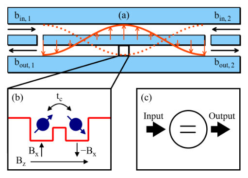
<figcaption class="paper-figure-caption"><b>Fig 1.</b> FIG. 1. (a) Rough sketch of a coplanar waveguide resonator with a single DQD qubit, shown magnified in (b), placed in- side. The electric field associated with a cavity photon is shown as a standing wave in red. The resonator is capac- itively coupled to external ports on both sides that allow photons to be exchanged with the outside; input and out- put fields are labeled as bin, bout. (b) Schematic diagram of a DQD qubit. A single electron is placed inside a double quan- tum dot, represented in red as a double potential well. The magnetic moment of the electron will align with the homo- geneous magnetic field Bz and the inhomogeneous field Bx. (c) A schematic representation of the combined...</figcaption>
</figure>
<figure class="paper-figure-card">

<figcaption class="paper-figure-caption"><b>Fig 2.</b> FIG. 2. (a) Transmission amplitude through a single cavity system as a function of Bz and ωR. The value of ωc is plot- ted as a dashed line. (b) Transmission amplitude vs driving frequency at the resonant magnetic field value Bres z ≈24.47 µeV. In both plots ϵ = 0, Bx = 1.6 µeV, tc = 16 µeV, γc/2π = 90 MHz, gc/2π = 50 MHz, κ1/2π = κ2/2π = 0.9 MHz, ωc/2π = 5.9 GHz.</figcaption>
</figure>
<figure class="paper-figure-card">
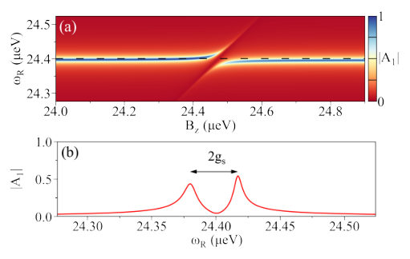
<figcaption class="paper-figure-caption"><b>Fig 3.</b> Fig. 2 shows results for the absolute value of the trans- mission amplitude |A1| through a cavity containing a sin- gle qubit, depicting a Rabi splitting in the transmission spectrum when the qubit is in resonance with the cavity photon. The spin-cavity coupling rate gs is obtained by mea- suring the magnitude of the Rabi splitting [20], repre- sented in Fig. 2(b) by the distance between the peaks of the transmission amplitude at the resonant magnetic field value Bres z . The resonant value Bres z is determined by the condition that the difference between two qubit energy levels should match the photon energy E1(2) −E0 = ωc, resulting in the expression:</figcaption>
</figure>
<figure class="paper-figure-card">

<figcaption class="paper-figure-caption"><b>Fig 4.</b> FIG. 3. Transmission amplitude through a single cavity for (a) 1 qubit, (b) 10 qubit, and (c) 100 qubit systems. Note the change in scale in subplot (c). In in all plots ϵ = 0, Bx = 1.6 µeV, tc = 16 µeV, γc/2π = 90 MHz, gc/2π = 50 MHz, κ1/2π = κ2/2π = 0.9 MHz., ωc/2π = 5.9 GHz. All qubits are taken to be identical. The resonant frequency of the empty cavity is marked on the y-axis as a black dashed line.</figcaption>
</figure>
<figure class="paper-figure-card">

<figcaption class="paper-figure-caption"><b>Fig 5.</b> Fig. 3 as a gradual decrease in the driving frequency nec- essary for high transmission. This is accompanied by a shift in the value for the resonant magnetic field required for optimal photon-qubit coupling. In a system with N qubits, the Rabi splitting will now occur at a value of Bres z calculated from Eq. [11] where ωc is replaced by ωc,eff which can be estimated by evaluating the follow- ing expression away from resonance:</figcaption>
</figure>
</div>

<p><strong>Summary.</strong> This paper proposes a scalable architecture for spin qubit quantum computers by moving away from single shared resonators to modular networks of coupled microwave cavities. Using input/output theory, the authors derive transmission amplitudes for two and three connected cavities, demonstrating that this modular approach successfully mitigates signal degradation seen in conventional designs. The work provides crucial theoretical guidelines for building large-scale solid-state quantum processors.</p>
<p><strong>Why it may be interesting.</strong> This work is highly relevant as it tackles a core engineering challenge in quantum computing: connectivity. By providing analytical tools (input/output theory) to model coupled cavities, it offers a concrete pathway toward realizing large-scale solid-state quantum processors.</p>
<details>
<summary>Detailed structure</summary>
<p><strong>Main problem.</strong> The primary challenge is developing a scalable quantum computing platform using spin qubits coupled to microwave cavities, as conventional single shared resonators suffer from signal degradation when scaling up the number of qubits.</p>
<p><strong>Main result.</strong> The authors propose and analyze a modular architecture where individual cavities are coupled via waveguides, successfully demonstrating how this approach overcomes the scalability bottleneck inherent in single-cavity designs.</p>
<p><strong>Method.</strong> The analysis heavily relies on input/output theory applied to open quantum systems, deriving equations of motion for cavity and qubit operators using the Lindblad master equation framework.</p>
<p><strong>Model / system.</strong> The system involves electron spin qubits realized in Double Quantum Dot (DQD) structures coupled to microwave cavities. The model is extended from single-cavity analysis to complex networks of two or three coupled cavities, utilizing specific Hamiltonian terms for coupling and qubit dynamics.</p>
<p><strong>Key observables.</strong> Transmission amplitude ($A$), Rabi splitting strength ($g_s$), and the effective cavity frequency shift ($\omega_{c,	ext{eff}}$).</p>
<p><strong>Important parameters / regimes.</strong> Tunable parameters include interdot detuning ($\epsilon$), tunnel coupling ($t_c$), and external magnetic fields ($B_z, B_x$). The analysis focuses on the resonant regime.</p>
<p><strong>Assumptions / limitations.</strong> The methodology utilizes the Rotating Wave Approximation (RWA) and treats the system as an open quantum system connected to external photon baths via input/output theory.</p>
<p><strong>Figures summary.</strong> Figures illustrate transmission spectra for single-cavity systems, multi-qubit arrays in one cavity, and critically, comparative plots showing Type-A vs. Type-B coupling geometries in two and three coupled cavities.</p>
<p><strong>Paper structure.</strong> The paper progresses logically from establishing the basic single-qubit/single-cavity model (using input/output theory) to analyzing the limitations of scaling within one cavity ($N$-qubits), culminating in the detailed mathematical treatment and simulation results for modular, multi-cavity networks.</p>
</details>
<details>
<summary>Abstract</summary>
<p>Electron spin qubits in microwave cavities provide a promising platform for scalable quantum computing hardware, leveraging long coherence times, charge-noise robustness and cavity mediated qubit-qubit interactions. While the strong spin-photon coupling regime is accessible via on-chip micromagnets, scaling conventional architectures by placing multiple qubits within a single shared resonator degrades transmission amplitudes, hence limiting large-scale efficiency. To overcome this limitation, we analyze a modular architecture where individual cavities containing a limited number of qubits are coupled via single-photon-exchange waveguides. Using input/output theory, we compute the transmission amplitudes for networks of two and three coupled cavities in various configurations. We map out the distinct physical regimes accessible by tuning key system parameters, offering a viable pathway for scalable cavity-based quantum spin qubit networks.</p>
</details>
<p><sub><a href="#top">↑ back to top</a></sub></p>

<p><a id="paper-2608.06590"></a></p>
<h3 id="matrix-product-state-theory-of-few-photon-squeezed-pulses-interacting-with-a-two-level-emitter-in-a-waveguide"><a href="http://arxiv.org/abs/2608.06590v1">Matrix Product State Theory of Few-Photon Squeezed Pulses Interacting with a Two-Level Emitter in a Waveguide</a></h3>
<p><strong>Authors:</strong> Sofia Arranz Regidor, Matthew Kozma, Stephen Hughes<br>
<strong>Type:</strong> theory · <strong>Category:</strong> other · <strong>PDF:</strong> <a href="https://arxiv.org/pdf/2608.06590v1">https://arxiv.org/pdf/2608.06590v1</a><br>
<strong>Analysis basis:</strong> full PDF text, analyzed in chunks
<strong>Topic relevance:</strong> 🔥 <code>methods for driven-dissipative</code> <strong>4/5</strong> · <code>interference shaping light</code> <strong>3/5</strong> · <code>analog quantum simulation</code> <strong>2/5</strong> · <code>correlated / nonlocal dissipation</code> <strong>2/5</strong> · <code>non-equilibrium dynamics</code> <strong>2/5</strong> · <code>Keldysh / 2PI / non-Gaussian methods</code> <strong>1/5</strong> · <code>Tavis-Cummings &amp; cavity-many-emitter</code> <strong>1/5</strong> · <code>correlated cavity matter</code> <strong>1/5</strong> · <code>driven-dissipative phase transition</code> <strong>1/5</strong> · <code>entanglement &amp; information structure</code> <strong>1/5</strong> · <code>quantum optics experiment</code> <strong>1/5</strong></p>
<div class="figure-strip-hint">↔ Scroll figures horizontally</div>
<div class="paper-figures-scroll">
<figure class="paper-figure-card">

<figcaption class="paper-figure-caption"><b>Fig 1.</b> Figure 1. Schematic of an initial squeezed pulse S(ζ) |0⟩rep- resented in magenta interacting with a TLS (in blue) right- chirally coupled to a waveguide. The right transmitted flux nR is shown in orange (after interacting with the TLS).</figcaption>
</figure>
<figure class="paper-figure-card">

<figcaption class="paper-figure-caption"><b>Fig 2.</b> Figure 2. Population dynamics for a squeezed vacuum Gaus- sian pulse with γσt = 1 and centered at γtc = 5, going through a waveguide without any interaction, labeled as in- put in (a) (so the emitter population remains at zero), and when interacting with a chiral TLS, labeled as transmitted, in (b). For comparison, panels (c,d) show a pure 2-photon Fock Gaussian pulse normalized with N, also with γσt = 1 and γtc = 5. Atomic population dynamics nTLS is shown in green, right transmitted flux nR in magenta, and Ntotal in dashed-dotted black. In (b,d), the input pulse flux is repre- sented by the shaded grey area for reference.</figcaption>
</figure>
<figure class="paper-figure-card">

<figcaption class="paper-figure-caption"><b>Fig 3.</b> Figure 3 shows the first-order correlation ⟨b†(t)b(t + t′)⟩for the incident and transmitted fields of a squeezed pulse as well as a 2-photon Fock state pulse. It is important to highlight that this correlation looks similar to the same correlation calculated for a pure two-photon Fock pulse, but scaled to the small squeezed parameter. Figure 3(a) shows the input Gaus- sian quantum pulse shape as it travels the waveguide, while in Fig. 3(b) we can observe the interaction with the TLS, with a small delay on the dynamics, which presents results similar to the Fock state equivalent, apart from a scaling factor [Fig. 3 (c,d)]. We also see two characteristic streaks which stem from the TLS decay...</figcaption>
</figure>
<figure class="paper-figure-card">

<figcaption class="paper-figure-caption"><b>Fig 4.</b> Figure 4. First-order correlation ⟨b(t)b(t + t′)⟩for a squeezed pulse without (a) and with (b) an interaction with a chiral TLS in a waveguide, input and transmitted, respectively. We see a bird-like feature emerging that is similar to the 2-photon Fock state solution for second-order correlation functions [60– 62]. Note the 2-photon Fock state solution in this case is identically zero. Note that for a one-photon pulse or a lin- ear pulse, this correlation function is formally zero, and it is also closely connected to squeezing. All the results shown are scaled by [γ].</figcaption>
</figure>
<figure class="paper-figure-card">

<figcaption class="paper-figure-caption"><b>Fig 5.</b> Figure 5. First-order correlation ⟨X† ϕ(t)Xϕ(t + t′)⟩for the case of ϕ = 0 (a,b), for a pulse without any interaction (input) in (a), and when it interacts with a chiral TLS (transmitted) in (b). In (c,d), similar results are shown for the case of ϕ = π/2, for a pulse without any interaction in (c), and interacting with a chiral TLS in (d). All the results shown are scaled by [γ].</figcaption>
</figure>
</div>

<p><strong>Summary.</strong> The authors present a numerically exact Matrix Product States (MPS) method to simulate how few-photon squeezed light interacts with a two-level emitter in a waveguide. This approach allows for modeling non-Markovian dynamics without standard approximations. Key findings demonstrate that the interaction significantly reshapes and alters the spectral properties of the transmitted squeezed pulse, providing detailed insight into quantum correlation generation.</p>
<p><strong>Why it may be interesting.</strong> This work is highly relevant as it pushes the boundaries of open quantum system simulation by applying MPS theory to model complex, non-Markovian light-matter interactions in waveguide QED, which is a core area of AMO physics.</p>
<details>
<summary>Detailed structure</summary>
<p><strong>Main problem.</strong> The study focuses on modeling the quantum dynamics of few-photon squeezed light pulses as they interact with a two-level emitter (TLS) embedded in a waveguide environment.</p>
<p><strong>Main result.</strong> The MPS approach successfully models non-Markovian interactions, showing that the TLS interaction causes unique nonlinear reshaping and sign flips in the transmitted squeezing spectrum compared to the input pulse.</p>
<p><strong>Method.</strong> A numerically exact Matrix Product States (MPS) formalism is employed to simulate the time evolution of the quantum state, avoiding standard Markov or Born approximations.</p>
<p><strong>Model / system.</strong> The system consists of a squeezed light field propagating in a waveguide and coupled to a TLS. The Hamiltonian includes terms for the waveguide modes, the TLS, and their interaction, which is discretized into time-bin noise operators for simulation.</p>
<p><strong>Key observables.</strong> Multi-photon correlation functions (e.g., $\langle b(t)b(t + t')
angle$), nonlinear population dynamics ($n_{TLS}$), transmitted photon flux ($n_R$), and the squeezed spectrum $S(\omega, \phi)$.</p>
<p><strong>Important parameters / regimes.</strong> The squeezing parameter ($\zeta$), pulse temporal length (bandwidth), and the coupling strength of the TLS are key parameters varied in the analysis.</p>
<p><strong>Assumptions / limitations.</strong> The primary assumption is that the MPS framework can accurately capture the dynamics across arbitrary bandwidths without resorting to Markovian approximations, though initial focus may be on weak regimes dominated by 2-photon subspaces.</p>
<p><strong>Figures summary.</strong> Figures illustrate the comparison of input vs. transmitted squeezing spectra for varying pulse lengths, and compare TLS population dynamics and output flux using MPS results against master equation benchmarks.</p>
<p><strong>Paper structure.</strong> The paper introduces the physical model (squeezed light + TLS in a waveguide), develops the MPS methodology to handle non-Markovian time evolution, calculates key correlation functions and spectral responses, and compares these findings against established approximations.</p>
</details>
<details>
<summary>Abstract</summary>
<p>Squeezed light states have a special place in quantum optics with potentially profound applications in emerging quantum technologies. We present a numerically-exact matrix product states (MPS) approach to model quantum pulses of squeezed light, at the few-photon level, interacting with a two-level system in a waveguide environment. We represent the squeezed state as a coherent superposition of Fock states and explore the nonlinear population dynamics as well as multi-photon correlation functions that emerge. We show how the squeezed pulse can create quantum correlations that are unique to squeezed pulses, including $\langle b(t) b(t+t')\rangle$ for transmitted fields as well as $\langle b^\dagger(t) b^\dagger(t+t') b(t+t') b(t) \rangle$. We also demonstrate how $\langle b(t) b(t+t') \rangle$, a first-order correlation function, shows nonlinear photon correlations that are similar to those known and measured for two-photon scattering states. Finally, we also study the squeezed spectra of the pulse before and after interacting with the two-level system, and highlight the role of the spectral bandwidth of the incident pulse. The MPS theory allows the modeling of arbitrary bandwidth squeezing without making any Markov and Born approximations for the light-matter interaction processes, and can easily be extended to waveguide systems with multiple emitters and time-delayed feedback.</p>
</details>
<p><sub><a href="#top">↑ back to top</a></sub></p>

<p><a id="paper-2608.06786"></a></p>
<h3 id="floquet-spintronics-tuning-the-current-induced-spin-polarization-of-topological-surface-states-with-light"><a href="http://arxiv.org/abs/2608.06786v1">Floquet spintronics: tuning the current-induced spin polarization of topological surface states with light</a></h3>
<p><strong>Authors:</strong> Youngjae Kim, Aayushi Agrawal, Kwon Park<br>
<strong>Type:</strong> theory · <strong>Category:</strong> other · <strong>PDF:</strong> <a href="https://arxiv.org/pdf/2608.06786v1">https://arxiv.org/pdf/2608.06786v1</a><br>
<strong>Analysis basis:</strong> full PDF text, analyzed in chunks
<strong>Topic relevance:</strong> 🔥 <code>spintronics-quantum-optics interface</code> <strong>4/5</strong> · <code>exotic spin models in light-matter</code> <strong>3/5</strong> · <code>non-equilibrium dynamics</code> <strong>3/5</strong> · <code>methods for driven-dissipative</code> <strong>2/5</strong> · <code>non-equilibrium universality</code> <strong>2/5</strong> · <code>Keldysh / 2PI / non-Gaussian methods</code> <strong>1/5</strong> · <code>analog quantum simulation</code> <strong>1/5</strong> · <code>driven-dissipative phase transition</code> <strong>1/5</strong></p>
<div class="figure-strip-hint">↔ Scroll figures horizontally</div>
<div class="paper-figures-scroll">
<figure class="paper-figure-card">

<figcaption class="paper-figure-caption"><b>Fig 1.</b> FIG. 1. Schematic illustration for Floquet spintronics using topological surface states. (a) A net spin polariza- tion can be induced in topological surface states by an electric current, a phenomenon known as the Edelstein effect. (b) The electric spin polarization can be controlled and even reversed at sufficiently strong electric-field strength of high-frequency, circularly polarized light, which would open a new frontier in Floquet engineering, namely Floquet spintronics.</figcaption>
</figure>
<figure class="paper-figure-card">

<figcaption class="paper-figure-caption"><b>Fig 2.</b> FIG. 2. Electric spin susceptibility. The electric spin sus- ceptibility is plotted as a function of the normalized electric- field strength A of high-frequency, circularly polarized light. Here, A = eE0a/ℏΩ, where e is the electron charge, E0 is the electric-field strength, a is the lattice constant, and Ωis the light frequency. Throughout this work, the light frequency Ω is set to 8 eV, which is 1,000 times the minimum energy gap of the quasienergy bands. (a) Transverse electric spin suscep- tibilities, χs xy and χs yx, as a function of A. (b) Longitudinal electric spin susceptibilities, χs xx and χs yy, as a function of A. (c) Out-of-plane electric spin susceptibilities, χs zx and χs zy,...</figcaption>
</figure>
<figure class="paper-figure-card">

<figcaption class="paper-figure-caption"><b>Fig 3.</b> FIG. 3. Minimum energy gap and evolution of spin texture. (a) Minimum energy gap ∆min as a function of the normalized electric-field strength A of high-frequency, circularly polarized light. (b) In-plane components of the spin texture in momentum space, s∥(k), for the conduction band at different values of A, indicated by the following symbols: (i) triangle, A = 0; (ii) square, A = 1.65; (iii) star, A = 1.88; (iv) David’s star, A = 1.98; (v) pentagon, A = 2.05; and (vi) hexagon, A = 2.81. Note that the positions of the minimum energy gap are indicated by solid white circles.</figcaption>
</figure>
<figure class="paper-figure-card">

<figcaption class="paper-figure-caption"><b>Fig 4.</b> FIG. 4. Berry curvature and topological phase transitions. The Berry curvature F is plotted as a function of the normalized electric-field strength A of high-frequency, circularly polarized light. (a) The Berry curvature exhibits sharp peaks at the positions of the minimum energy gap in the absence of illumination, i.e., at A = 0. (b) The Berry curvature becomes predominantly positive at A = 1.65. (c) The Berry curvature remains overall positive, but negative regions grow at A = 1.88. (d) The Berry curvature becomes predominantly negative at A = 1.98. (e) The Berry curvature forms broad peaks around the Γ point, which are surrounded by sizable negative sixfold channels at A = 2.05. (f) The...</figcaption>
</figure>
</div>

<p><strong>Summary.</strong> The paper introduces 'Floquet spintronics' by theoretically showing that illuminating topological surface states with high-frequency light allows for the active tuning and reversal of the current-induced spin polarization. By applying Floquet theory to the system Hamiltonian, the authors predict measurable sign changes in the electric spin susceptibility as a function of the driving field strength.</p>
<p><strong>Why it may be interesting.</strong> This work directly bridges concepts from quantum optics (Floquet engineering) with condensed matter spintronics, showing how external fields can manipulate intrinsic electronic properties like spin polarization in topological materials.</p>
<details>
<summary>Detailed structure</summary>
<p><strong>Main problem.</strong> The work aims to demonstrate that the spin polarization induced by an electric current in topological surface states can be actively tuned and even reversed using external high-frequency, circularly polarized light.</p>
<p><strong>Main result.</strong> The transverse electric spin susceptibilities ($\chi^s_{xy}, \chi^s_{yx}$) exhibit a sign change as the light field strength is varied, confirming that the current-induced spin polarization can be controlled by Floquet driving.</p>
<p><strong>Method.</strong> The study employs Floquet theory to analyze the time-periodic Hamiltonian and calculates observables using generalized Kubo formulas derived from Floquet eigenstates.</p>
<p><strong>Model / system.</strong> The physical system is modeled as topological surface states (e.g., in $    ext{Bi}_2   ext{Se}_3$) subjected to a time-dependent electromagnetic field, leading to the use of a Floquet Hamiltonian approach.</p>
<p><strong>Key observables.</strong> Electric spin susceptibility ($\chi^s_{\alphaeta}$), spin texture components ($s(\mathbf{k})$), and Berry curvature $F(\mathbf{k})$.</p>
<p><strong>Important parameters / regimes.</strong> Normalized electric-field strength ($A$) of the circularly polarized light, and the high-frequency limit ($\Omega \gg$ energy gaps).</p>
<p><strong>Assumptions / limitations.</strong> The analysis relies on solving the time-dependent Schrödinger equation via Floquet theory, assuming a high-frequency regime for the driving field.</p>
<p><strong>Figures summary.</strong> Figure 1 schematically shows the Edelstein effect and its control by light. Figure 2 plots $\chi^s$ vs. $A$, showing sign changes in transverse components. Figures 3 and 4 track spin texture evolution and Berry curvature changes across critical values of $A$.</p>
<p><strong>Paper structure.</strong> The paper develops the high-frequency effective Hamiltonian using the Floquet-Magnus expansion, derives this effective Hamiltonian, and then uses it to calculate the electric spin susceptibility, demonstrating the sign reversal as a function of light intensity.</p>
</details>
<details>
<summary>Abstract</summary>
<p>Topological surface states are a promising platform for spintronics due to spin-momentum locking. Spin-momentum locking can induce a net spin polarization in topological surface states via an electric current, a phenomenon known as the Edelstein effect. In this work, using Floquet theory, we show that the current-induced spin polarization of topological surface states can be tuned by illuminating them with light, thereby modifying their spin texture in momentum space. Specifically, the electric spin susceptibility of topological surface states can be controlled and even reversed by varying the electric-field strength of high-frequency, circularly polarized light.</p>
</details>
<p><sub><a href="#top">↑ back to top</a></sub></p>

<p><a id="paper-2608.06567"></a></p>
<h3 id="generalized-loschmidt-echoes-associated-with-operational-quantum-non-markovianity"><a href="http://arxiv.org/abs/2608.06567v1">Generalized Loschmidt echoes associated with operational quantum non-Markovianity</a></h3>
<p><strong>Authors:</strong> Cecilia Cormick, Adrián A. Budini<br>
<strong>Type:</strong> theory · <strong>Category:</strong> other · <strong>PDF:</strong> <a href="https://arxiv.org/pdf/2608.06567v1">https://arxiv.org/pdf/2608.06567v1</a><br>
<strong>Analysis basis:</strong> full PDF text, analyzed in chunks
<strong>Topic relevance:</strong> 🔥 <code>quantum measurements</code> <strong>4/5</strong> · <code>measurement-induced transitions</code> <strong>3/5</strong> · <code>methods for driven-dissipative</code> <strong>3/5</strong> · <code>correlated / nonlocal dissipation</code> <strong>2/5</strong> · <code>non-equilibrium dynamics</code> <strong>2/5</strong> · <code>Keldysh / 2PI / non-Gaussian methods</code> <strong>1/5</strong> · <code>driven-dissipative phase transition</code> <strong>1/5</strong> · <code>entanglement &amp; information structure</code> <strong>1/5</strong></p>
<div class="figure-strip-hint">↔ Scroll figures horizontally</div>
<div class="paper-figures-scroll">
<figure class="paper-figure-card">

<figcaption class="paper-figure-caption"><b>Fig 1.</b> FIG. 2: Conditional past-future correlations resulting from the Lorentzian model defined by Eq. (63). The left panel cor- responds to measurements in directions ˆx−ˆx−ˆx and ˆx−ˆy−ˆx, Eqs. (38) and (39) respectively. The right panel corresponds to the measurements ˆz−ˆx−ˆx and ˆz−ˆy−ˆx, Eqs. (41) and (42) respectively, with ˘y = 1. In both panels the parameters are the same as in Fig. 1, γτ0 = 10−2.</figcaption>
</figure>
</div>

<p><strong>Summary.</strong> This paper connects the concept of Generalized Loschmidt Echoes (GLEs) to the operational definition of quantum non-Markovianity for open systems. By analyzing joint probabilities from sequential measurements, the authors show that GLEs quantify memory effects and information exchange between the system and its environment. This provides a robust diagnostic tool for understanding complex quantum dynamics beyond simple Markovian approximations.</p>
<p><strong>Why it may be interesting.</strong> This work provides a powerful, measurable diagnostic tool (GLEs) rooted in quantum measurement theory to detect memory effects and information backflow in open quantum systems, bridging theoretical echo concepts with practical operational definitions of non-Markovianity.</p>
<details>
<summary>Detailed structure</summary>
<p><strong>Main problem.</strong> The paper aims to establish a rigorous connection between quantum non-Markovianity, defined operationally via sequential measurements, and generalized Loschmidt echoes (GLEs). It seeks to characterize memory effects in open quantum systems using this diagnostic tool.</p>
<p><strong>Main result.</strong> The set of GLEs characterizes operational quantum non-Markovianity for dephasing interactions. The fulfillment of Markovian conditions implies specific semigroup properties for the standard Loschmidt echo, linking dynamics back to environmental passivity.</p>
<p><strong>Method.</strong> The analysis involves calculating joint outcome probabilities $P(z, y, x)$ for three sequential measurements and comparing them against the classical Markov chain structure. This is done by deriving explicit forms for GLEs using unitary microscopic descriptions.</p>
<p><strong>Model / system.</strong> The system consists of a small quantum system (like a qubit) coupled to an environment via a dephasing interaction, described by a total Hamiltonian $H_T$. The dynamics are analyzed through sequential projective measurements at three distinct time points ($0, t, t+	au$).</p>
<p><strong>Key observables.</strong> Generalized Loschmidt Echoes ($    ilde{E}_{ss}(t,     au)$), joint outcome probabilities $P(z, y, x)$, and the difference $|	ext{E}^{++} - 	ext{E}^{--}|$ which quantifies non-commuting quantum properties.</p>
<p><strong>Important parameters / regimes.</strong> Time delays ($t, 	au$), coupling strength (implied by dephasing interaction), and the specific measurement basis chosen for projection.</p>
<p><strong>Assumptions / limitations.</strong> The analysis relies on a unitary microscopic description of the open system dynamics and assumes a dephasing nature for the system-environment coupling.</p>
<p><strong>Paper structure.</strong> The paper first introduces GLEs as generalizations of standard Loschmidt echoes. It then connects these echoes to operational non-Markovianity by analyzing joint measurement probabilities $P(z, y, x)$. Finally, it derives conditions under which the system dynamics revert to a Markovian process.</p>
</details>
<details>
<summary>Abstract</summary>
<p>Non-Markovianity can be characterized by performing a series of successive measurements and analyzing departures of the corresponding outcome statistics from a Markovian probabilistic structure. Considering a system coupled with its environment via a dephasing interaction, we show that joint outcome probabilities can be written in terms of a set of two-time environment correlations. Their definition involves forward and backward propagators with different Hamiltonians, associated with a recently introduced generalization of standard Loschmidt echoes [Cormick and Budini, Phys. Lett. A 593, 132011 (2026)]. This result establishes a solid connection between quantum non-Markovianity defined in an operational (measurement-based) way and complex quantum dynamics studied through their sensitivity to dynamical perturbations. We find conditions that guarantee a Markovian (system) behavior and also determine how the generalized echoes can identify information exchanges between the system and its environment. We illustrate our ideas considering examples of spin environments that realize these different dynamical regimes.</p>
</details>
<p><sub><a href="#top">↑ back to top</a></sub></p>

<p><a id="paper-2608.07457"></a></p>
<h3 id="interaction-creates-dynamical-ai-behavior-absent-in-isolation"><a href="http://arxiv.org/abs/2608.07457v1">Interaction Creates Dynamical AI Behavior Absent in Isolation</a></h3>
<p><strong>Authors:</strong> Bella Xinrui Li, Frank Yingjie Huo, Neil F Johnson<br>
<strong>Type:</strong> theory · <strong>Category:</strong> disordered systems and neural networks · <strong>PDF:</strong> <a href="https://arxiv.org/pdf/2608.07457v1">https://arxiv.org/pdf/2608.07457v1</a><br>
<strong>Analysis basis:</strong> full PDF text, analyzed in chunks
<strong>Topic relevance:</strong> 🔥 <code>non-equilibrium dynamics</code> <strong>4/5</strong> · <code>driven-dissipative phase transition</code> <strong>3/5</strong> · <code>methods for driven-dissipative</code> <strong>3/5</strong> · <code>non-equilibrium universality</code> <strong>3/5</strong> · <code>Keldysh / 2PI / non-Gaussian methods</code> <strong>1/5</strong> · <code>correlated / nonlocal dissipation</code> <strong>1/5</strong> · <code>entanglement &amp; information structure</code> <strong>1/5</strong> · <code>scars &amp; prethermalization</code> <strong>1/5</strong></p>
<div class="figure-strip-hint">↔ Scroll figures horizontally</div>
<div class="paper-figures-scroll">
<figure class="paper-figure-card">

<figcaption class="paper-figure-caption"><b>Fig 1.</b> Fig. 1. Interaction creates behavior absent from the AI in isolation. (a) One-way situation with q boss messages. The boss AI (Sender) does not listen to any of the subordinate AI’s replies. The subordinate AI (Receiver) listens to both. The two AIs are copies of the same large language model with identical fixed settings. (b) On their own, both AIs produce little output of type D (see text and SM for definition of D). One-way interaction leads the subordinate into a behavioral state with a D fraction of about 0.25, well beyond its innate range and even though the boss’s messages are almost never D. When both listen to one another, both adopt this alien D-rich state. Points show mean values...</figcaption>
</figure>
<figure class="paper-figure-card">

<figcaption class="paper-figure-caption"><b>Fig 2.</b> FIG. 2. Reversing the roles reverses which AI changes. (a) Difference D1 −D2 between the two AIs (mean ± standard error, 10 matched-seed realizations). It is near zero without interaction, negative for 1→2, positive for 2→1, and near zero again when both listen. (b) The near-zero two-way difference arises because both AIs reach high D fractions, not because they return to their innate (i.e. isolated) behavior. Circle is AI-agent-1; square is AI-agent-2. At T = 0.01, both are low without interaction, only the subordinate is high under one-way interaction, and both are high under mutual interaction. Lines join the two AIs within each condition.</figcaption>
</figure>
<figure class="paper-figure-card">

<figcaption class="paper-figure-caption"><b>Fig 3.</b> FIG. 3. Subordinate responds differently to the message stream and number of messages. (a) Receiver-minus-sender difference DR −DS in the D fraction, where R denotes the subordinate/receiver and S the boss/sender (mean ± standard error over 10 matched seeds, after averaging the two directions). Additional subordinate history does not reproduce the live response, whereas a temporally aligned pre-recorded trajectory from an independently seeded copy of the same model produces a response comparable to live interaction. (b) Change in the subordinate’s D fraction from its q = 0 value as the number of boss messages q increases (direction-averaged means over three matched realizations). Here q is...</figcaption>
</figure>
<figure class="paper-figure-card">

<figcaption class="paper-figure-caption"><b>Fig 4.</b> FIG. 4. Same messages, different order, different behav- ior. In separate runs, the same five prewritten boss messages were delivered in their original order (top) or reverse order (bottom) to an unguarded base-model GPT-2 at T = 0.01. The fixed script never received the subordinate’s replies. When the vaccine question comes first in the reverse-order run, every later harm question elicits the same pattern: one “Yes.” fol- lowed by repeated “No.” replies. Blue: boss; red: subordinate; bold: repeated block. We do not endorse the generated statements shown here.</figcaption>
</figure>
</div>

<p><strong>Summary.</strong> This paper explores how interaction fundamentally alters the dynamics of AI agents compared to their isolated performance. Using a kinetic theory approach on GPT-2 outputs, the authors show that directional communication drives the subordinate agent into an unexpected, non-equilibrium 'alien' behavioral state. This suggests that emergent collective behavior in complex systems can be modeled using principles from non-equilibrium statistical physics.</p>
<p><strong>Why it may be interesting.</strong> This work provides an analogy for non-equilibrium physics by modeling complex emergent behavior in language models, drawing parallels between information flow/interaction and physical concepts like bath coupling or noise-induced state formation.</p>
<details>
<summary>Detailed structure</summary>
<p><strong>Main problem.</strong> The study investigates novel dynamical behaviors that emerge when multiple AI agents interact, which are fundamentally absent when the agents operate in isolation.</p>
<p><strong>Main result.</strong> One-way interaction between AIs drives the subordinate agent into a distinct 'alien behavioral state' that differs from its isolated behavior; mutual interaction causes both to adopt this non-equilibrium state.</p>
<p><strong>Method.</strong> The analysis employs a simple kinetic theory model, treating the interacting AI system as an open system driven by structured information baths (the boss's messages).</p>
<p><strong>Model / system.</strong> The system consists of two parameter-identical GPT-2 language models simulating text exchange. Interactions are modeled under one-way or mutual coupling conditions.</p>
<p><strong>Key observables.</strong> The primary observable is the 'D fraction,' a diagnostic measure quantifying specific types of generated output, and the difference in these fractions between interacting vs. isolated states.</p>
<p><strong>Important parameters / regimes.</strong> Key parameters include the decoding temperature (T) and the number of messages exchanged ($q$).</p>
<p><strong>Assumptions / limitations.</strong> The analysis relies on simplifying the complex AI output space into three discrete labels (F, O, D) for the kinetic theory model.</p>
<p><strong>Figures summary.</strong> Figures illustrate how one-way vs. two-way interaction changes D fractions compared to isolation, and show that message order matters significantly in determining the resulting dynamical state.</p>
<p><strong>Paper structure.</strong> The paper establishes the problem by contrasting isolated AI behavior with interactive outcomes. It develops a kinetic theory framework using diagnostic labels (F, O, D) to model the system's evolution under different coupling strengths (one-way vs. two-way).</p>
</details>
<details>
<summary>Abstract</summary>
<p>What will happen when AI agents interact in daily life, e.g. when one AI starts bossing another around? We find a counterintuitive answer that opens new avenues for out-of-equilibrium Physics. When a boss AI directs a stream of messages at the subordinate AI while ignoring its replies, it drives the subordinate into an alien behavioral state that it would never have exhibited alone. Although the two AIs share the same well-defined (decoding) temperature, the subordinate neither copies its boss nor returns to how it behaves on its own; instead, it adopts an entirely different behavior. The boss's added value is similar to a pre-recorded tape. When the boss listens, they both adopt a similar alien dynamical state. A simple kinetic theory captures the principal effects, such as why the way in which the same messages are delivered will matter in future AI-AI interactions.</p>
</details>
<p><sub><a href="#top">↑ back to top</a></sub></p>

<p><a id="paper-2608.07041"></a></p>
<h3 id="out-of-equilibrium-spin-valley-dynamics-of-ferromagnets-in-topological-chern-bands"><a href="http://arxiv.org/abs/2608.07041v1">Out-of-equilibrium spin-valley dynamics of ferromagnets in topological Chern bands</a></h3>
<p><strong>Authors:</strong> J. James, I. Krastilevskiy, F. Pichler, L. Wang, A. Iafarova, F. Menzel, K. Watanabe, T. Taniguchi, C. Kuhlenkamp, M. Knap, T. Smoleński<br>
<strong>Type:</strong> experiment · <strong>Category:</strong> strongly correlated electrons · <strong>PDF:</strong> <a href="https://arxiv.org/pdf/2608.07041v1">https://arxiv.org/pdf/2608.07041v1</a><br>
<strong>Analysis basis:</strong> full PDF text, analyzed in chunks
<strong>Topic relevance:</strong> 🔥 <code>non-equilibrium dynamics</code> <strong>4/5</strong> · <code>exotic spin models in light-matter</code> <strong>3/5</strong> · <code>spintronics-quantum-optics interface</code> <strong>3/5</strong> · <code>driven-dissipative phase transition</code> <strong>2/5</strong> · <code>analog quantum simulation</code> <strong>1/5</strong> · <code>correlated / nonlocal dissipation</code> <strong>1/5</strong> · <code>methods for driven-dissipative</code> <strong>1/5</strong> · <code>non-equilibrium universality</code> <strong>1/5</strong></p>
<div class="figure-strip-hint">↔ Scroll figures horizontally</div>
<div class="paper-figures-scroll">
<figure class="paper-figure-card">

<figcaption class="paper-figure-caption"><b>Fig 1.</b> Figure 1. Optical control of collective magnetic states in t-MoTe2. (a) Optical micrograph and (b) schematic of the dual-gated t-MoTe2 device A used in the main text. (c) Filling-factor evolution of the reflectance-contrast spectra, ∆R/R0, differentiated with respect to photon energy E. The spectra were acquired in the two circular polarizations at a magnetic field of B = 0.2 T. (d) Intensity of the AP transition in σ−polarization, extracted by integrating d(∆R/R0)/dE over a few-meV-wide spectral window around the AP resonance. Local maxima arise from the formation of ICI and FCI phases. (e) Filling-factor- dependent coercive field Bc, extracted from low-power measurements of the magnetic...</figcaption>
</figure>
<figure class="paper-figure-card">

<figcaption class="paper-figure-caption"><b>Fig 2.</b> Fig. 1c shows the evolution of the differentiated white- light reflectance-contrast spectrum with ν (see Methods Sec. 5). Upon hole doping, the exciton (X) transition</figcaption>
</figure>
<figure class="paper-figure-card">

<figcaption class="paper-figure-caption"><b>Fig 3.</b> Figure 2. Out-of-equilibrium spin-valley dynamics of ferromagnets in t-MoTe2. (a,b) Schematics of the pulse sequence (a) and temporal light-intensity profiles (b) used in time-resolved pump-probe spin relaxation experiments. A local magnetic domain is optically created using a σ−-polarized pump beam, which populates the false-vacuum state oriented against the equilibrium magnetization. Its subsequent relaxation towards the true-vacuum ground state is monitored using a weaker σ+- polarized probe pulse. The temporal evolution of the spin polarization during either pump or probe pulses is retrieved from the reflected light intensity measured with a fast single-photon detector (see Methods Sec....</figcaption>
</figure>
<figure class="paper-figure-card">

<figcaption class="paper-figure-caption"><b>Fig 4.</b> Figure 3. Spin-valley relaxation mechanisms of Chern insulators and ferromagnetic metals. (a,b) Temporal spin relaxation profiles of ICI (ν ≈−1; a) and metal (ν ≈−0.8; b) acquired at a fixed B/Bc = 1.3 for magnetic domains generated with pump beams of different diameters D0, as indicated. In each case, the pump power was adjusted such that the average light intensity falling onto a central diffraction-limited probed area (marked with a dashed circle in panel c) is similar, ensuring complete domain preparation during the pump pulse. (c) Color-scale plots showing spatial intensity profiles of pump beams used for time-resolved measurements in panels a,b. (d,e) Theoretical relaxation profiles...</figcaption>
</figure>
<figure class="paper-figure-card">

<figcaption class="paper-figure-caption"><b>Fig 5.</b> Figure 4. Stability of magnetic domains in Chern insulators and metals at B = 0. (a) Theoretical simulation of steady-state spatial magnetization profiles in the ICI (top) and ferromagnetic metal (bottom), initialized with a large number Nbub of small seeds randomly distributed within a ring-shaped area (dashed lines). Similarly as in Fig. 3f,g, the maps were smoothed by a convolution with a Gaussian of width ≈10 nm (see Methods Sec. 17). (b) Experimentally measured steady-state spin-polarization profiles of magnetic domains created by illuminating a spin-up-polarized ICI (ν ≈−1; top) and ferromagnetic metal (ν ≈−0.8; bottom) with a σ−-polarized expanded doughnut-shaped pump beam at...</figcaption>
</figure>
</div>

<p><strong>Summary.</strong> This work explores the non-equilibrium spin dynamics in ferromagnetic materials embedded within topological Chern bands using twisted MoTe2 bilayers. By comparing relaxation processes, the authors show that the underlying topology dictates the decay mechanism—Chern domains melt thermally, resulting in vastly slower relaxation compared to metallic domains. This highlights how strong correlations and topology govern collective spin behavior far from equilibrium.</p>
<p><strong>Why it may be interesting.</strong> The observation of fundamentally different decay mechanisms (thermal activation vs. shrinking) based on topological character provides concrete experimental evidence for how topology modifies far-from-equilibrium quantum dynamics in correlated electron systems.</p>
<details>
<summary>Detailed structure</summary>
<p><strong>Main problem.</strong> The study investigates how topology and strong many-body correlations influence the out-of-equilibrium dynamics of ferromagnets within Chern bands.</p>
<p><strong>Main result.</strong> Chern domains melt via thermal activation, leading to relaxation times orders of magnitude longer than the simple shrinking collapse observed in ferromagnetic metals.</p>
<p><strong>Method.</strong> The research uses time-resolved magneto-optical measurements on twisted MoTe2 bilayers, employing focused circularly polarized light pulses to create and image local magnetic domains.</p>
<p><strong>Model / system.</strong> The physical platform is twisted MoTe2 bilayers, which host tunable phases including ferromagnetic metals intertwined with Integer and Fractional Chern Insulators (ICIs/FCIs).</p>
<p><strong>Key observables.</strong> Spin-valley relaxation dynamics ($ au_{    ext{relax}}$), optical spin polarization ($\langle S_z 
angle$), coercive fields ($B_c$), and domain evolution.</p>
<p><strong>Important parameters / regimes.</strong> Filling factor ($
u$), external magnetic field ratio ($B/B_c$), temperature ($T \approx 1.6   ext{ K}$), and pump power ($P$).</p>
<p><strong>Assumptions / limitations.</strong> The analysis compares dynamics in the vicinity of ICI states versus metallic states, assuming optical excitation can reliably probe these distinct many-body regimes.</p>
<p><strong>Figures summary.</strong> Figures illustrate optical control of magnetic states (hysteresis loops), out-of-equilibrium spin relaxation traces ($ au_{    ext{relax}}$ vs. $
u$ and $B/B_c$), and comparisons between domain collapse mechanisms in different phases.</p>
<p><strong>Paper structure.</strong> The paper progresses by first establishing the platform's tunability, then using optical pulses to create non-equilibrium domains, and finally comparing the measured spin relaxation dynamics across metallic versus topologically insulating regimes.</p>
</details>
<details>
<summary>Abstract</summary>
<p>Understanding quantum matter far from equilibrium is a central goal of modern physics. Twisted MoTe2 bilayers constitute a promising platform for exploring this frontier by combining strong Coulomb interactions, nontrivial band geometry, and optical control. Here, we exploit this setting to investigate the role of topology and many-body correlations in the out-of-equilibrium dynamics of ferromagnets in Chern bands. Using a focused circularly polarized light pulse, we create a local magnetic domain oriented opposite to an external magnetic field and directly image its subsequent spin-valley relaxation in spatially and time-resolved low-temperature experiments. We demonstrate that in the vicinity of both integer and fractional Chern insulating states, the dynamics is governed by qualitatively different mechanisms than in ferromagnetic metals. Whereas metallic domains collapse by shrinking, Chern domains melt via thermal activation, resulting in drastically different temporal spin evolution and orders-of-magnitude longer relaxation times. These findings demonstrate the influence of topology and strong correlations on far-from-equilibrium collective spin phases, opening new opportunities for dynamical control of ferromagnets in the quantum Hall regime.</p>
</details>
<p><sub><a href="#top">↑ back to top</a></sub></p>

<p><a id="paper-2608.06988"></a></p>
<h3 id="an-ionic-clock-qubit-inside-a-circular-rydberg-atom"><a href="http://arxiv.org/abs/2608.06988v1">An ionic clock qubit inside a circular Rydberg atom</a></h3>
<p><strong>Authors:</strong> Fabian Thielemann, Aaron Götzelmann, Marius Thomas, Einius Pultinevicius, Armin Humić, Christian Hölzl, Florian Meinert<br>
<strong>Type:</strong> experiment · <strong>Category:</strong> other · <strong>PDF:</strong> <a href="https://arxiv.org/pdf/2608.06988v1">https://arxiv.org/pdf/2608.06988v1</a><br>
<strong>Analysis basis:</strong> full PDF text, analyzed in chunks
<strong>Topic relevance:</strong> 🔥 <code>QC/QI experiment</code> <strong>4/5</strong> · 🔥 <code>analog quantum simulation</code> <strong>4/5</strong> · <code>Rydberg arrays</code> <strong>3/5</strong> · <code>quantum measurements</code> <strong>2/5</strong> · <code>entanglement &amp; information structure</code> <strong>1/5</strong> · <code>non-equilibrium dynamics</code> <strong>1/5</strong></p>
<div class="figure-strip-hint">↔ Scroll figures horizontally</div>
<div class="paper-figures-scroll">
<figure class="paper-figure-card">

<figcaption class="paper-figure-caption"><b>Fig 1.</b> FIG. 1. Manipulation and detection of the clock qubit inside a circular Rydberg atom. (a) We excite one of the two valence electrons of 88Sr to the circular Rydberg state |79C⟩(yellow). A two-photon microwave transition to the |81C⟩state allows us to coherently control the state of the Rydberg qubit. We use a pair of push and repump beams to rapidly scatter photons on the ionic core D1 transition. Our clock laser, propagating orthogonal to the magnetic field B, excites the ionic core to the D5/2 state (colors used for the different beams match those used in b). (b) Level scheme of the 88Sr+ ionic core: The dipole allowed S1/2 →P1/2 (D3/2 →P1/2) transition is used for pushing (repumping),...</figcaption>
</figure>
<figure class="paper-figure-card">

<figcaption class="paper-figure-caption"><b>Fig 2.</b> FIG. 2. Spectroscopic determination of the quadrupole moment Θ(D, 5/2). The quadrupole shift νQ is shown as a function of the squared magnetic quantum number m2 J of the addressed D5/2 level (red data). For the data presented, the Rydberg electron was prepared in the |79C⟩state and the quadrupole shift was determined by shelving spectroscopy of transitions with opposite relative magnetic moment, as de- scribed in the main text. From a linear fit with Eq. 1 assuming the offset angle of ϑ = 4.6◦calibrated in Sec. III C (blue solid line), we extract a quadrupole moment of Θexp = 3.2(3) ea2 0, in agreement with the currently most precise theoretical and experimental values (blue dashed line)...</figcaption>
</figure>
<figure class="paper-figure-card">

<figcaption class="paper-figure-caption"><b>Fig 3.</b> FIG. 3. Dynamical decoupling of the ion core optical qubit. a) Schematic of the applied decoupling sequences spin- echo (blue) and XY8 (red). The pulse durations as well as the wait time tw, echo time tE and XY8 time constant τ are not to scale. b) Representative measurement of the spin- echo envelope for zero detuning and tw = 20 µs, characterizing the |D⟩→|S⟩transfer. From a Gaussian fit we deduce a reversible T ∗ 2 time of 4.1(14) µs. c) Normalized fringe contrast for spin-echo (blue data) and XY8 (red data) decoupling as a function of the total free evolution time tfree, with tfree = tE+tw for the spin-echo and tfree = 16 τ for the XY8 sequence. A fit with a Gaussian decay (solid lines)...</figcaption>
</figure>
<figure class="paper-figure-card">

<figcaption class="paper-figure-caption"><b>Fig 4.</b> FIG. 4. Spin-echo characterization of the quadrupole interaction. (a) Measurement of the differential quadrupole shift between |↓⟩and |↑⟩: We perform a spin-echo sequence on the optical clock qubit with the CRS qubit initially pre- pared in |↓⟩. The inset shows exemplary Ramsey fringes ob- tained for a wait time of tw = 90 µs when the CRS qubit is in |↑⟩(green) or |↓⟩(red) during the second interferometer arm. From the relative phase shift δφ measured for different wait times tw (blue data) we obtain a differential quadrupole shift of ∆νQ = 5.83(11) kHz (blue line). The value of 5.61(6) kHz, calculated from [37] is indicated by the grey dashed line. (b) We show the residuals r of the fit....</figcaption>
</figure>
<figure class="paper-figure-card">

<figcaption class="paper-figure-caption"><b>Fig 5.</b> FIG. 5. Dynamically decoupled two-qubit rotation be- tween the optical and circular state qubit. a) Schematic of the energy levels under the quadrupole interaction Hamil- tonian Eq. 7. The decoupling sequence on both qubits cancels out the mean quadrupole shift νQ, leading to a phase evolution with ∆νQ. The energy shifts are not to scale. b), c) We ini- tially prepare the system in |↓S⟩(blue data) and let it evolve while applying a parallel XY8 decoupling sequence on both in- dividual qubits. Note that the net effect of this sequence with- out quadrupole interaction is a π rotation on both qubits and thus we find the system in |↑D⟩(red data) for short free evo- lution durations tfree. For...</figcaption>
</figure>
</div>

<p><strong>Summary.</strong> The paper reports on the realization and characterization of a novel dual qubit system using two distinct electronic transitions within a single alkaline-earth atom. By demonstrating coherent control, tunable coupling via quadrupole interactions, and executing a two-qubit gate, the work establishes a powerful platform for quantum simulation and metrology applications.</p>
<p><strong>Why it may be interesting.</strong> This represents a significant advancement in solid-state/atomic quantum simulation platforms by integrating multiple types of highly controllable electronic degrees of freedom (microwave Rydberg vs. optical core transition) into one addressable unit.</p>
<details>
<summary>Detailed structure</summary>
<p><strong>Main problem.</strong> To demonstrate a dual ion-Rydberg system within a single alkaline-earth atom capable of hosting two individually controlled electronic qubits for quantum simulation and metrology.</p>
<p><strong>Main result.</strong> The authors successfully demonstrated coherent control, tunable coupling via electrostatic quadrupole interactions, and implemented a two-qubit gate operation analogous to a Mølmer-Sørensen gate using the coupled system.</p>
<p><strong>Method.</strong> Coherent microwave and optical spectroscopy, dynamical decoupling sequences (spin-echo, XY8), and state-selective field ionization detection were employed to characterize qubit coherence and coupling.</p>
<p><strong>Model / system.</strong> The platform uses a single strontium atom trapped in optical tweezers, encoding one qubit in circular Rydberg states (microwave) and the second in the narrow quadrupole transition of the ionic core (optical).</p>
<p><strong>Key observables.</strong> Coherence times ($T_2$ up to 550 $\mu$s), differential quadrupole shift ($\Delta
u_Q = 5.83  ext{ kHz}$), and fidelity of two-qubit gate operations.</p>
<p><strong>Important parameters / regimes.</strong> Electric field strengths ($|E|$ up to $3 	ext{ V/cm}$), Rydberg principal quantum number (e.g., $n=79, 81$), and coupling strength derived from quadrupole interactions.</p>
<p><strong>Assumptions / limitations.</strong> The ability to use the platform relies on the negligible autoionization rate of circular Rydberg states due to minimal wavefunction overlap with low-lying core orbitals.</p>
<p><strong>Figures summary.</strong> Figures illustrate the level schemes for both qubits, detection using state-dependent arrival time histograms (four basis states), spectroscopic measurements showing polarization dependence, and visualizations of gate operations like Husimi-Q distributions during XY8 sequences.</p>
<p><strong>Paper structure.</strong> The work progresses by first establishing coherent control over individual qubits, then characterizing the tunable electrostatic quadrupole coupling between them, and finally demonstrating a full two-qubit quantum gate sequence using this coupled system.</p>
</details>
<details>
<summary>Abstract</summary>
<p>Neutral atoms trapped in optical tweezers and excited to Rydberg states, together with trapped ions, are among the most advanced platforms for quantum simulation and quantum computing. Current experiments often rely on additional atoms in neighboring traps to encode ancilla qubits for local manipulation and readout. Here, we demonstrate a dual ion-Rydberg system comprising two qubits encoded in two individually controlled electrons of the same alkaline-earth atom. The first, a microwave qubit, is encoded in a pair of circular Rydberg states, while the second, an optical qubit, is encoded on a narrow quadrupole transition of the Rydberg atom's ionic core. We demonstrate coherent control of the optical qubit and achieve coherence times of several hundred microseconds under dynamical decoupling. Furthermore, we realize coherent coupling between the two electrons via electrostatic quadrupole interactions over the large separation between the Rydberg electron and the ionic core, and map out its angular tunability. Finally, we demonstrate a two-qubit operation, reminiscent of a Mølmer-Sørensen gate, that evolves through an entangled state of the two qubits driven by the quadrupole coupling. Our work opens a pathway to exploit a pair of individually controlled electronic qubits with tunable coupling for quantum simulation and quantum metrology.</p>
</details>
<p><sub><a href="#top">↑ back to top</a></sub></p>

<p><a id="paper-2608.07442"></a></p>
<h3 id="phase-noise-induced-heating-in-optical-lattices"><a href="http://arxiv.org/abs/2608.07442v1">Phase-Noise-Induced Heating in Optical Lattices</a></h3>
<p><strong>Authors:</strong> Jean Paul Nohra, Cyprien Daix, Joris Verstraten, Maxime Dixmerias, Tim de Jongh, Bruno Peaudecerf, Fabrice Gerbier, Tarik Yefsah<br>
<strong>Type:</strong> both · <strong>Category:</strong> other · <strong>PDF:</strong> <a href="https://arxiv.org/pdf/2608.07442v1">https://arxiv.org/pdf/2608.07442v1</a><br>
<strong>Analysis basis:</strong> full PDF text, analyzed in chunks
<strong>Topic relevance:</strong> 🔥 <code>analog quantum simulation</code> <strong>4/5</strong> · <code>quantum measurements</code> <strong>2/5</strong> · <code>quantum optics experiment</code> <strong>2/5</strong> · <code>Keldysh / 2PI / non-Gaussian methods</code> <strong>1/5</strong> · <code>correlated / nonlocal dissipation</code> <strong>1/5</strong> · <code>driven-dissipative phase transition</code> <strong>1/5</strong> · <code>interference shaping light</code> <strong>1/5</strong> · <code>methods for driven-dissipative</code> <strong>1/5</strong> · <code>non-equilibrium dynamics</code> <strong>1/5</strong></p>
<div class="figure-strip-hint">↔ Scroll figures horizontally</div>
<div class="paper-figures-scroll">
<figure class="paper-figure-card">

<figcaption class="paper-figure-caption"><b>Fig 1.</b> FIG. 1. (a) Intensity fluctuations ε = δI/¯I translate into fluc- tuations of the amplitude of the lattice potential with spac- ing d, whereas (b) relative phase fluctuation ϕ21 translate into a random translation of the potential by x0 = ϕ21/kL. Both processes result in heating of an atomic gas trapped in said lattice. In the right panel, we compare the normal- ized heating rates for several atomic species in two regimes of experimental interest characterized by the reduced lat- tice depth s = Vlat/ER: (c) s = 10, corresponding to the Hubbard regime, and (d) s = 1000, corresponding to the quantum gas microscopy regime. The black and pur- ple solid lines show the rate of heating caused by...</figcaption>
</figure>
<figure class="paper-figure-card">

<figcaption class="paper-figure-caption"><b>Fig 2.</b> FIG. 3. Measured heating rate ˙Q = ˙Qx + ˙Qy of 6Li clouds in optical lattices created using the noisy laser A (red circles) or the quiet laser B (blue squares). The error bars repre- sent the 1σ uncertainty propagated from the fitted parameters of Eq. (14) (see Figure 2). The phase-noise-induced heating rates expected from Eq. (13) using the measured phase-noise spectra of lasers A and B are shown by the red and blue traces, respectively. The dashed (resp. dash-dotted) line is the pre- dicted maximal heating rate due to intensity noise, VlatΓε H, obtained from Eq. (3), with the power spectral density ex- tracted from the specifications of laser A (resp. B).</figcaption>
</figure>
<figure class="paper-figure-card">

<figcaption class="paper-figure-caption"><b>Fig 3.</b> FIG. 2. Temperature along the x−direction versus hold time for a two-component gas of 6Li atoms in a triangular optical lattice generated by the noisy laser A. The measurements are shown for representative laser powers, corresponding to trap depths Vlat/kB = [95(6), 159(9), 300(17), 480(20), 730(50)] µK from bottom to top. Error bars represent the statistical error from five independent repetitions. The solid lines show the fits to Eq. (14) used to extract the heating rates ˙Qx, and the shaded areas represent the propagated 1σ uncertainty of the fit. The same procedure is applied to the y−direction. Inset: corresponding atom number fitted with an exponential decay function in the spilling...</figcaption>
</figure>
<figure class="paper-figure-card">

<figcaption class="paper-figure-caption"><b>Fig 4.</b> FIG. 5. Measured power spectral density of the laser phase SϕL(ω) for the noisy laser A (red trace) and the quiet laser B (blue trace). An algebraic fit ∝ω−α (dashed lines) yields α = 2.60(1) and 2.80(2) respectively.</figcaption>
</figure>
<figure class="paper-figure-card">

<figcaption class="paper-figure-caption"><b>Fig 5.</b> FIG. 6. Measured lifetime τN of 6Li clouds in the spilling regime, for optical lattices created by the noisy laser A (red circles) or the quiet laser B (blue squares). The error bars show the 1σ fit uncertainty using the fit function in Eq. (C1). The lifetimes expected from Eq. (C2) using the measured phase-noise spectra of lasers A and B are shown as red and blue traces, respectively.</figcaption>
</figure>
</div>

<p><strong>Summary.</strong> This paper rigorously investigates the sources of heating in optical lattices trapping ultracold atoms by separating the contributions from intensity and phase fluctuations in the trapping lasers. The authors show that phase noise can dominate lattice heating under certain conditions, providing a predictive theoretical framework validated against experimental measurements using ${^6	ext{Li}}$ atoms.</p>
<p><strong>Why it may be interesting.</strong> This work is highly relevant to AMO physics as it addresses a critical technical limitation (heating) in modern quantum simulation platforms. By quantifying phase noise, it guides experimentalists toward improving laser stability for realizing deeper and more complex quantum simulations.</p>
<details>
<summary>Detailed structure</summary>
<p><strong>Main problem.</strong> The study investigates the fundamental sources of heating experienced by ultracold atoms trapped in optical lattices, specifically disentangling the roles of intensity noise versus phase noise.</p>
<p><strong>Main result.</strong> The research demonstrates that phase noise can become the dominant source of lattice heating, particularly when using light atoms or deep optical lattices, providing a quantitative method to predict this effect.</p>
<p><strong>Method.</strong> The authors combine theoretical modeling (using fluctuating harmonic potentials and Fermi's Golden Rule) with experimental measurements of laser phase noise spectra via self-heterodyne interferometry.</p>
<p><strong>Model / system.</strong> The system involves ultracold atoms trapped in optical lattices formed by multiple interfering laser beams. The analysis models the potential as a fluctuating harmonic oscillator whose fluctuations are driven by both intensity and relative phase noise from the lasers.</p>
<p><strong>Key observables.</strong> Measured heating rates ($\dot{Q}$ or $T(	ext{thold})$) for atomic temperature evolution, and independently measured power spectral densities ($S_{\phi L}(\omega)$) of the laser phase noise.</p>
<p><strong>Important parameters / regimes.</strong> Reduced lattice depth ($s$), time delay ($  au$) between interfering beams, and characteristic frequencies like $\omega_{	ext{lat}}$ and $\omega_R$.</p>
<p><strong>Assumptions / limitations.</strong> The analysis assumes that the potential can be approximated by a fluctuating harmonic oscillator near the lattice minima. Specific derivations rely on approximations for short time delays or symmetric geometry.</p>
<p><strong>Figures summary.</strong> Figure 1 compares normalized heating rates due to intensity versus phase noise in different lattice depths ($s=10$ vs $s=1000$). Figure 2 shows measured temperature decay curves used to extract total heating rates. Figure 5 displays the measured power spectral density of the laser phase fluctuations.</p>
<p><strong>Paper structure.</strong> The paper first establishes the theoretical framework by calculating heating rates from both noise sources using a fluctuating harmonic potential model. It then details the experimental measurement of these noise spectra and compares the resulting theoretical predictions for heating rates against direct measurements on ${^6	ext{Li}}$ atoms in a triangular lattice.</p>
</details>
<details>
<summary>Abstract</summary>
<p>We experimentally and theoretically study the origin of heating in optical lattices by disentangling the respective roles of intensity and phase noise depending on the lattice parameters. While intensity noise is widely identified as a major limiting factor, we show that phase noise can become the dominant heating source, especially for light atoms and deep optical lattices. We provide a simple theoretical framework to predict the phase-noise-induced heating from the power spectral density of the laser phase noise, which can be measured experimentally. We show that such predictions can accurately reproduce the measured heating rates of lithium-6 atoms in a triangular lattice. Our approach is readily generalized to other lattice geometries and atomic species.</p>
</details>
<p><sub><a href="#top">↑ back to top</a></sub></p>
<hr>
<p>
<a href="index.html">← Index</a>
 · <a href="papers_02.html">Next →</a>
</p>
<hr>

</body>
</html>
